Frequency Lock Encoding
Abstract
Wireless communication links carry an inherent inefficiency—they possess more synchronization capacity than is required under most operating conditions. This thesis presents and evaluates Frequency Lock Encoding (FLE), a physical-layer wireless subprotocol that exploits this underutilized communication capacity. FLE enables a secondary parallel stream of data on top of existing wireless protocols through controlled frequency offsets that are interpreted as noise by an unaware receiver. The mathematical framework underlying this technique is analyzed for both single- and multi-carrier protocols. The subprotocol is then evaluated through simulation across a wide range of operational parameters and transmission channel conditions. FLE is subsequently implemented on software-defined radios (SDRs) and later adapted to commercial off-the-shelf (COTS) hardware. Finally, applications in steganography, spectrum coordination, and wireless network security are presented, showing some of the many potential applications for utilizing this latent signaling space.
Keywords: Subprotocol, Physical Layer, Spectrum Coordination, Wireless Network Security, Steganography
Acknowledgments
This work was conducted under the funding of the NSF Graduate Research Fellowship Program. I am grateful for their support in providing both research funding and financial aid during my tenure as a graduate student. I would like to thank Dr. Phil Lundrigan for his invaluable mentorship throughout both my undergraduate and graduate studies. Having worked together for many years, I am deeply grateful for his willingness to take me on as a young student, for helping me develop both professionally and academically, and for encouraging and enabling my own research ideas early in the process. I would like to acknowledge my committee members for their thoughtful and helpful feedback. Additionally, much of the mathematical analysis presented in this thesis was developed with the help of retired professor Dr. Michael D. Rice. Lastly, I would like to thank my wonderful wife Kaylee, who has been my greatest support all along the way.
Nomenclature
Symbols
- Denotes a subprotocol quantity (e.g., is the subprotocol symbol period)
- Denotes an estimated quantity
- One-sided thermal noise power spectral density
- Phase error detector gain
- Equivalent noise bandwidth
- PLL damping factor
- Subprotocol frequency deviation (Hz)
- Normalized frequency deviation (cycles/symbol)
- Number of primary symbols per subprotocol symbol,
- Modulation order of a constellation
- Depth (number of rows) of the interleaved codeword matrix
- Reed–Solomon parity bytes per codeword row
- Maximum correctable burst erasure length (bytes)
Abbreviations
- IDC
- Index of Dispersion for Counts
- FLE
- Frequency Lock Encoding
- CFO
- Carrier frequency offset
- SDR
- Software-defined radio
- COTS
- Commercial off-the-shelf
- MCS
- Modulation and coding scheme
- RS
- Reed–Solomon (error-correcting code)
- FEC
- Forward error correction
- OFDM
- Orthogonal frequency-division multiplexing
- PLL
- Phase-locked loop
- STS/LTS
- Short/Long Training Sequence (IEEE 802.11 preamble)
- BER
- Bit error rate
- AWGN
- Additive white Gaussian noise
- MAC
- Medium access control
1 Introduction
Wireless links face unpredictable impairments—thermal noise, device motion, temperature drift, interference, oscillator irregularities, and even subtle shifts along a wavefront—that introduce errors into transmitted signals. To ensure reliability under extreme operating conditions, protocols are designed with powerful synchronization mechanisms that reserve additional bandwidth and correction capability to handle impairments that may only rarely occur. Most of the time, however, systems operate well within their correction envelope, and this excess synchronization capacity sits unused.
Traditionally, analog impairments have been viewed solely as problems to eliminate. Modulation schemes are carefully tuned to balance throughput and reliability, and because synchronization failure is catastrophic, designers consistently “overshoot,” provisioning systems for worst-case conditions. The result is a latent surplus of synchronization and correction power that, under ordinary conditions, is treated as dead weight.
This thesis proposes a paradigm shift in how impairments and synchronization overhead are viewed in wireless communication. Instead of allowing this surplus correction capacity to remain idle, we intentionally introduce controlled, meaningful perturbations into the signal that occupy the same space currently reserved for natural noise. These perturbations are not random disturbances, but carefully engineered modifications that remain entirely within the correction bounds of the synchronization loops. As a result, a legacy receiver absorbs them while still recovering the original message with little to no degradation. To a receiver that knows how to interpret them, however, the perturbations encode a second, parallel stream of information. In this way, what was once wasted synchronization margin becomes a new signaling resource: a secondary communication layer operating simultaneously with the primary protocol without requiring additional spectrum, extra antennas, or changes to the underlying communication standard. This is akin to adding additional lanes to an already existing spectrum highway, enabling more traffic to coexist within the same physical medium.
A subprotocol is a communication protocol that operates on top of an already existing one without impacting the performance of the primary protocol. Prior work has explored a variety of approaches to implement subprotocols, including inter-packet delays [1], RF noise [2], special Wi-Fi frames [3], or channel state information [4]. This thesis presents Frequency Lock Encoding (FLE), a fully developed wireless subprotocol that embeds information through controlled frequency perturbations applied directly to the underlying communication waveform. Because FLE operates through the same synchronization mechanisms already present in wireless receivers, it is inherently protocol-agnostic—meaning it can operate on top of virtually any wireless protocol regardless of its framing structure, modulation format, or higher-layer implementation. Since every known wireless protocol requires some form of carrier frequency synchronization, there exists a mechanism through which FLE can operate.
FLE is also inherently backward-compatible. A receiver unaware of the subprotocol simply interprets the intentional perturbations as ordinary noise and continues normal operation without modification. A properly functioning subprotocol therefore leaves the primary communication effectively intact while enabling secondary communication in parallel. This compatibility allows FLE to integrate into existing wireless infrastructure without requiring changes to deployed hardware or protocol standards.
The proposed approach is also fundamentally opportunistic. The subprotocol consumes only the excess impairment-correction capacity available in the primary communication link. Under operating conditions where the full synchronization capability of the receiver is needed for the primary communication, the secondary signaling can be reduced or disabled entirely without altering the operation of the primary system.
While there are many possible ways to introduce meaningful perturbations into a communication system, this work focuses specifically on controlled frequency offsets. The choice of frequency-domain perturbations over other synchronization domains, such as timing, is intentional. Frequency synchronization loops generally do not suffer from self-noise in the same manner as timing recovery loops, resulting in a cleaner observable signal. Furthermore, although carrier synchronization is commonly implemented in hardware, the outputs of these algorithms are frequently exposed to firmware or software layers, unlike many synchronization mechanisms in other domains. This accessibility enables practical implementation on both software-defined radios (SDRs) and commercial off-the-shelf (COTS) wireless hardware.
There are many potential applications of such a technology, with additional opportunities left for future work. The primary contributions of this thesis are summarized as follows:
Introduction and development of Frequency Lock Encoding (FLE) as a protocol-agnostic, backward-compatible, opportunistic wireless subprotocol.
Mathematical analysis of FLE operation on both single-carrier and multi-carrier modulation schemes.
Simulation and evaluation of FLE performance across a variety of wireless channel models.
Implementation and validation of FLE using software-defined radios (SDRs).
Adaptation of FLE for commercial off-the-shelf (COTS) hardware through manipulation of microprocessor firmware.
Presentation of novel applications of FLE technology in wireless steganography and spectrum coordination (UnderTone) as well as physical-layer wireless security (SpectralSeal).
1.1 System Overview
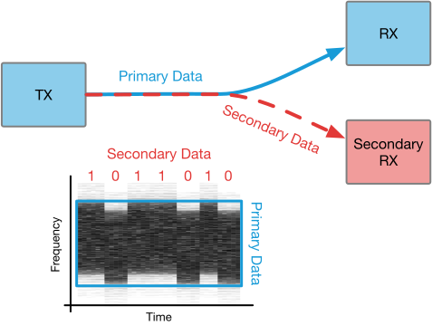
The core mechanism of FLE is illustrated in Figure 1.1. The transmitter introduces small, controlled frequency offsets into its carrier signal. These offsets encode secondary data as a frequency-shift keyed (FSK) modulation applied on top of the primary waveform. Each transmitted frame carries a deliberate carrier-frequency perturbation whose magnitude and sign map to a subprotocol symbol. On the receive side, every modern wireless receiver already estimates the carrier-frequency offset (CFO) between itself and the incoming transmitter as part of its normal synchronization process. A standard receiver treats these perturbations as ordinary oscillator drift and corrects them transparently, recovering the primary data with little to no degradation. An FLE-aware receiver, however, reads the per-frame CFO estimates and demodulates them to recover the secondary data stream.
The key insight is that the perturbations occupy the same parameter space as natural impairments—crystal drift, temperature variation, Doppler shift—and remain within the correction capability of the receiver’s synchronization loops. The subprotocol therefore coexists with the primary communication without additional spectrum, extra antennas, or modifications to the underlying standard.
This work investigates FLE under two implementation schemes: a complete-access scenario using software-defined radios (SDRs), where the transmitter and receiver have full control over the IQ samples; and a constrained-access scenario using commercial off-the-shelf (COTS) Wi-Fi hardware, where the radio is managed by closed-source firmware. In the latter case, we demonstrate that strategic reading and writing of undocumented hardware registers enables a fully functional FLE system despite the lack of direct baseband access.
This last point deserves emphasis, because it determines what deploying FLE would actually cost. Both halves of the mechanism are already present in commodity silicon. On the receive side, every wireless receiver estimates carrier frequency offset as part of normal synchronization, so the subprotocol observable is computed whether or not anyone reads it. On the transmit side, the carrier is synthesized by a tunable element—a fractional- divider in the hardware used here—so imposing the overlay is a matter of retuning at the subprotocol symbol rate rather than of adding signal-processing hardware. Neither end requires new silicon. What they require is access: the relevant registers must be exposed through the software stack, which on the platforms studied in this thesis meant discovering them experimentally, and which a vendor could instead provide in firmware. Where that access is granted, FLE is a software feature of hardware that already exists, and both the transmitter and the receiver of Chapter 4 are built this way on unmodified devices.
2 Mathematical Analysis
Frequency Lock Encoding comprises two wireless communication systems: the base protocol and the subprotocol. The following analysis will first treat a generic single-carrier modulation, representative of any underlying linear protocol. It will then be extended to the multi-carrier case, exploring the similarities and differences in implementation. The purpose of this analysis is to explore, quantitatively, the design parameters of the FLE system and their impact on the underlying protocol, finding the region where both primary and subprotocol can coexist without impacting each other’s performance.
2.1 Single-Carrier Analysis
In FLE for single-carrier modulation, the base protocol is a linear modulation whose complex-valued lowpass equivalent waveform [23] is
where
the -th symbol drawn from the alphabet comprising (generally complex-valued) elements (e.g., the 16-QAM alphabet);
a unit-energy pulse shape defined on the interval (e.g., the square-root raised cosine pulse shape);
the symbol time (s/symbol) for the base protocol; the reciprocal is the symbol rate for the base protocol.
The symbols are assumed to be an iid sequence of equally-likely random variables with average symbol energy .
In normal circumstances, the real-valued bandpass signal is created from (2.1) using [23]
The up-conversion of to is assumed to be performed by an I/Q mixer.
When the FLE subprotocol is used, the up-conversion step is modified, either in software or hardware. The real-valued bandpass signal is instead created from (2.1) using
where the time-varying phase is due to the subprotocol and is described next.
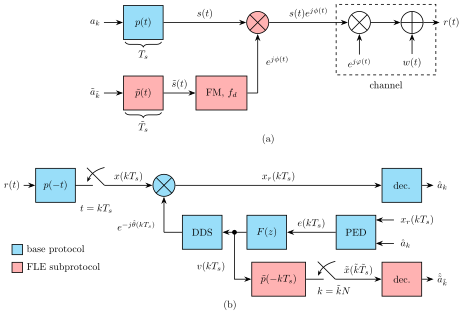
The subprotocol consists of the PAM waveform given by
where
the -th symbol drawn from the alphabet comprising real elements (e.g., the binary alphabet);
a pulse shape defined on the interval and normalized to unity DC gain, , so that a constant symbol produces a constant frequency deviation of exactly Hz;a
the symbol time (s/symbol) for the subprotocol; the reciprocal is the symbol rate for the subprotocol.
The pulse train (2.4) is applied to a frequency modulator with frequency deviation to produce the complex-valued lowpass equivalent signal [24]
where the instantaneous phase is
Readers familiar with CPM will note that (2.8) is a CPM signal with digital modulation index when the pulse shape is scaled to have area [24].
The FLE subprotocol for single carrier modulation is summarized by the system in Figure 2.1. The FLE subprotocol will not significantly degrade the performance of the base protocol if the base protocol phase estimator is able to track out the phase variations induced by the subprotocol. A decision-directed phase-locked loop is the assumed phase synchronizer for the base protocol, though a data-aided model would behave similarly. The factors that determine tracking capability of the base protocol include:
The frequency deviation of the subprotocol, given by .
The symbol rate of the subprotocol relative to the symbol rate of the base protocol. This ratio is denoted and is given by
(2.9)The equivalent closed-loop bandwidth of the base protocol carrier phase PLL given by .
The value of at which the base protocol operates.
These factors are examined below.
2.1.1 Signal Detection
The real-valued bandpass version of the received signal is
where is an unknown phase shift in addition to the phase induced by the subprotocol due to delay, oscillator uncertainty, or the Doppler shift. is the thermal noise modeled as a white wide-sense stationary normal random process with zero mean and power spectral density W/Hz.
A block diagram of the optimum (in the maximum likelihood sense) coherent detector is illustrated in Figure 2.1 (b). The received signal is downconverted and a filter is applied, matched to the base protocol pulse shape . The matched filter output is sampled in synchronism with the symbols. (Perfect symbol timing synchronization is assumed, but not carrier phase synchronization. This is because signal samples produced by the carrier phase PLL for the base protocol are used to detect the subprotocol symbols.) The phase shift to be tracked by the base protocol’s carrier phase PLL is
The carrier phase PLL for the base protocol is shown by the blue blocks in the figure. The -th matched filter output is de-rotated by the current phase estimate
The -th de-rotated matched filter output is used to make the -th symbol decision for the base protocol. The de-rotated matched filter output and the decision are used to compute the -th phase error using the maximum likelihood phase error detector (PED):
The -th error signal is filtered by the loop filter with z-domain transfer function whose output drives a direct digital synthesizer (DDS). The DDS produces the next phase offset estimate as described in [23].
The subprotocol detector is identified by the red blocks in Figure 2.1 (b). The input to the subprotocol detector is the loop filter output . Why this is the case is explained in the tracking analysis below where it is shown that is a sampled version of a constant scale factor times the pulse train (2.4), where the sample rate is samples/symbol. Motivated by the optimum detector for PAM in the additive white Gaussian noise channel, is applied to a filter matched to the subprotocol pulse shape . The matched filter output is “sampled” in synchronism with the symbols by retaining every -th sample. The sampled matched filter output is used to make symbol decisions.
2.2 PLL Analysis
To analyze the performance of a carrier-phase PLL in the presence of the subprotocol, we first examine the variance of the phase estimate , which quantifies how much the PLL output fluctuates due to noise and other signal impairments. We will then introduce the effect of the subprotocol as one of such impairments. The limits on the PLL’s correction capability determine both the primary protocol’s bit error rate and the secondary channel’s signal-to-noise ratio, and thus the ability of the two protocols to coexist.
Establishing coexistence reveals a balancing act. As the frequency deviation of the subprotocol increases, the PLL loses its ability to track the induced phase variations, degrading performance in the primary link. While the subprotocol link is strengthened, it too breaks down as the PLL loses lock. Conversely, if the frequency deviation of the subprotocol is too small, the subprotocol symbols cannot be reliably decoded.
Assuming the primary protocol’s pulse shape satisfies the Nyquist no-ISI condition, the -th matched filter output is
where is a sequence of complex-valued normal random variables with zero mean and auto-correlation function
where is the Kronecker delta function. The corresponding de-rotated matched filter output is
The second term on the right-hand side of (2.17) is a complex-valued normal random variable with zero mean and autocorrelation function (2.15). Using (2.17), the -th PED output may be written
Assuming the phase error is small enough so that the decisions are correct (this assumption is justified in Section 2.2.1), the -th error sample becomes
In (2.21), the -th phase error is
and the thermal noise term , which is the imaginary part of the de-rotated matched filter noise projected onto the symbol decision, is the -th member of a real-valued normal random sequence with zero mean and autocorrelation function
The S-curve of the maximum likelihood PED is defined by [25]
where the expectation in (2.24) is with respect to the data symbols and the thermal noise. The S-curve for the data-aided version of the maximum likelihood PED is
The S-curve (2.25) indicates there is one stable lock point and that the lock point is at . For the decision-directed case, the S-curve exhibits multiple stable lock points that are determined by the rotational symmetries of the alphabet . Of interest in the tracking analysis below is the fact that for near 0, the S-curves for the data-aided and decision-directed maximum likelihood PEDs coincide [23], [25].
The PED gain is the slope of the S-curve at the origin:
The PED gain is important in computing the loop filter coefficients to achieve a desired performance goal. The PED output (2.21) defines the system shown in Figure 2.2 (a). Following convention, a normalized version of the nonlinear S-curve is applied to the phase error. For this reason, the thermal noise term in the model is added before the application of the PED gain . The relationship between in Figure 2.2 (a) and the thermal noise term in (2.21) is
The sequence is applied to the loop filter with transfer function whose output is applied to a discrete-time integrator with transfer function . The discrete-time integrator represents the phase accumulator in the DDS [23].
2.2.1 PLL Tracking Analysis
We now quantify the variance of the estimate in the lock condition. The variance of is the phase jitter of the system. The PLL is considered locked when . When , the nonlinear abstraction in Figure 2.2 (a) may be replaced by the linear model in Figure 2.2 (b). The linear model permits the use of frequency-domain techniques in the analysis. The loop filter output is of the form
where is the contribution to from and is the contribution to from . The z-transform of (2.28) is
where
is the z-transform of , and is the z-transform of the realization of . The output is of the form
where is the contribution to due to and is the contribution to due to . On a realization-by-realization basis, the z-transform of the loop output is
where
is the z-transform of , and is the z-transform of the realization of .
The several noise terms introduced above all describe the same physical thermal noise, but observed at different points in the loop. We will later adapt this term to include noise induced by the subprotocol. For clarity, these noise terms thus far are summarized here:
is the complex-valued noise at the matched filter output, defined in (2.14);
is the real-valued noise produces at the PED output (2.21), formed from the imaginary part of the de-rotated matched filter noise;
is that same noise referred to the loop input, scaled by the PED gain as described by (2.27); it is the noise injected into the linear model of Figure 2.2 (b);
is the noise component of the loop filter output , equal to the response of through ;
is the noise component of the phase estimate , equal to the response of through .
The performance of the base protocol is a function of the phase jitter. As shown above, the variance of is the variance of the noise term which is obtained as follows. From (2.23) and (2.27), the autocorrelation function of is
By the Wiener-Khinchin Theorem, the power spectral density of is
From (2.32), is the response to input by a system with transfer function . Consequently, the power spectral density of is
The variance of is
The closed-loop equivalent noise bandwidth is defined by [23], [25]
Using (2.26) and this definition, the variance may be written
The relationship (2.39) shows that the phase jitter for the base protocol is proportional to the closed loop bandwidth and inversely proportional to . For a given , decreasing reduces phase jitter (which is desirable), but it also increases acquisition time (undesirable) and reduces the pull-in range (also undesirable). The carrier phase PLL used in the base protocol selects to balance these competing effects and achieve an acceptable overall trade-off.
2.2.2 Subprotocol Performance
With the loop carrier phase PLL designed to meet the performance requirements of the base protocol, what is the impact on the subprotocol? We return to (2.29) and a close examination of (2.30). For large and small , the pulse train representing the base protocol is highly oversampled. Consequently, our interest is in the behavior of the frequency response for near 0. Using the first-order Taylor series approximation
for , the frequency response for near zero is
In words, acts as a differentiator for highly oversampled inputs. Thus, assuming the highly oversampled condition, the phase component in (2.28) is
where we differentiate (2.7) to obtain (2.44).
The approximation (2.41), and with it (2.44), is not unconditional. It holds only while the bandwidth of the subprotocol pulse train lies below the closed-loop bandwidth of the base protocol’s carrier phase PLL. Outside that condition the loop no longer presents a flat differentiator to the subprotocol; it attenuates and disperses the pulse train instead, and (2.44) ceases to describe at all. Since the pulse train occupies roughly and the loop passes roughly cycles per base-protocol symbol, the condition is a lower bound on . This is a separate failure mode from the loss of lock analyzed below: here the base protocol is untouched and it is the subprotocol that fails, because the observable it is read from has been filtered away. Chapter 3 shows that this bound produces a notably abrupt edge in the measured operating region.
The first term on the right-hand side of (2.44) corresponds to a sampled version of the scaled pulse train in (2.4), allowing us to recover the subprotocol symbols with a second matched filter. The associated scaling factor is proportional to the frequency deviation .
The second term on the right-hand side of (2.44) corresponds to a sampled version of the time derivative of the channel-induced phase, which is the noise term of the subprotocol. This term can be interpreted under three representative cases:
The phase offset is constant, i.e., . In this case, .
The phase offset is a linear ramp, , corresponding to a constant frequency offset of (cycles/s) at the PLL input. In order to track a constant frequency offset with zero steady-state phase error, the loop filter must include a pole at [23]. A proportional-plus-integral loop filter is therefore typically employed [23]. In this case, which is constant and, when normalized per symbol interval, scales as . This term depends on the ratio between the frequency offset and the symbol rate of the base protocol. For practical carrier phase-locked loops, negligible performance degradation typically requires [25]. Accordingly, this contribution is generally small and may be suppressed in practice by applying a DC-blocking filter to prior to detection.
The phase offset is time-varying in a more general sense. If is not constant, the subprotocol remains valid provided that the variation of is slow relative to the subprotocol symbol rate.
A changing Doppler shift also provides negligible disturbance for the subprotocol. Consider a platform closing at m/s with a km miss distance at a MHz carrier. The Doppler shift sweeps most rapidly at closest approach, at approximately
where is the closing speed, the carrier wavelength, and the miss distance. Over a single subprotocol symbol—tens of microseconds for the parameters used in this work—the Doppler shift changes by a few millihertz, which is negligible beside the deviation the subprotocol itself imposes. The channel term in (2.44) is thus orders of magnitude below the subprotocol term for realistic geometries, and whatever residual constant remains is removed by the DC blocker in any case.
The regime that does defeat this argument is high mobility combined with fast frequency-selective fading, in which ceases to be quasi-static and Case 3 no longer applies. That case is the principal limitation of the technique, and Chapter 3 examines it directly under the ITU delay profiles.
In light of the common case number 2 above, however, our analysis uses the proportional-plus-integrator loop filter [23]
to create a second-order closed-loop response with cycles/symbol with an equivalent s-domain damping factor , the same values used for the lock limits of Figure 2.5 and for every simulation in Chapter 3.b The two frequency responses and are plotted in Figure 2.3. Observe that for F in the vicinity of 0, approximates the ideal derivative which is the desired behavior for subprotocol symbol estimation.
To estimate the noise of the loop filter output in the presence of the subprotocol, we revisit (2.28), where is seen to be the response to of a system with frequency response . Consequently, the power spectral density of the sequence is
The noise sample in (2.28) is the -th member of a correlated random sequence of zero-mean normal random variables. The system shown in Figure 2.1 (b) uses a non-optimal reduced-complexity detectorc but one that is still optimum in the case of white noise. The noise variance under such a detector is
The corresponding variances and are plotted in Figure 2.4.
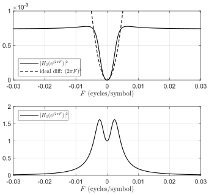
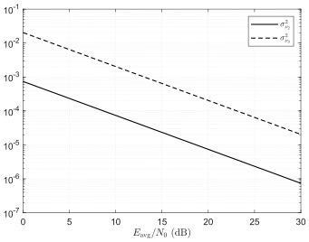
We will now show that the probability of error for the subprotocol is a function of the primary protocol’s signal-to-noise ratio. An example is given for the binary case:
Assuming the matched filter has unit energy and that the subprotocol pulse shape satisfies the Nyquist no-ISI condition, the -th matched filter output is
where is a real-valued normal random variable with zero mean and variance
The equality follows from the unit-energy assumption on , since the matched filter scales noise variance by the squared -norm of its coefficients.
The probability of error depends on the effective signal-to-noise ratio at the subprotocol matched filter output, given by
where is the integral on the right-hand side of (2.48). The numerator is the squared signal amplitude at the subprotocol detector input, determined entirely by the frequency deviation and symbol amplitude . The denominator is the noise variance at that same input, which depends on and the equivalent noise bandwidth of the base protocol’s carrier phase PLL through . Crucially, the subprotocol SNR scales linearly with the base protocol’s : a stronger primary link directly improves secondary channel reliability. This coupling means the subprotocol effectively borrows SNR from the primary link rather than having an independent noise budget.
2.2.3 Lock Limits
The ability of the base protocol’s carrier phase PLL to track out the phase induced by the subprotocol is the limiting factor for Gardner examined “modulation limits” for the case where the input is an FM signal modulated by [26]. Two cases for are considered.
Case 1: Sinusoidal Modulation In the case of sinusoidal modulation, the modulating signal is
The peak frequency deviation is . For a second-order PLL, the peak frequency deviation must satisfy
The following steps are used to apply this result to the current problem:
Multiplying both sides of (2.54) by normalizes the peak frequency deviation to the base protocol symbol time:
(2.55)For the proportional-plus-integrator loop filter, the natural frequency and equivalent noise bandwidth are related by
(2.56)Substituting (2.56) into (2.55) produces
(2.57)The period of the sinusoid is the symbol time for the subprotocol:
(2.58)Substituting (2.58) into (2.57) produces
(2.59)For binary PAM with , an alternating symbol sequence produces an approximate sinusoid with peak amplitude
(2.60)where
(2.61)If is the square-root raised-cosine pulse shape with roll-off , normalized as above to unity DC gain, then
(2.62)where is essentially independent of . Substituting (2.62) into (2.59) produces
(2.63)Simplify using :
(2.64)
The final result is that the following relationship must be satisfied for the carrier phase PLL to maintain lock during tracking:
Case 2: Random Modulation In this case is a wide-sense stationary Gaussian random process with zero mean and power spectral density
The Gaussian random process creates an RMS frequency deviation of in the modulated carrier. The ability of a PLL to track the instantaneous phase places an upper limit, called a “lock limit,” on the RMS frequency deviation. The lock limit for a second-order PLL is [26, Eq. (5.23)]
where is an experimentally determined constant called a “crest factor” in [26]. The following steps are used to apply this result to the current problem:
The RMS frequency deviation relative to the sample time ( the symbol time of the base protocol) is the desired quantity. Multiplying both sides of (2.67) by produces
(2.68)We again use the natural frequency to equivalent noise bandwidth relationship for a continuous-time proportional-plus-integrator loop filter from (2.56). Substituting (2.56) into (2.68) produces
(2.69)If the subprotocol uses the square-root raised-cosine pulse shape with roll-off for , then
(2.70)Substituting (2.70) into (2.69) produces
(2.71)Simplify using , so that :
(2.72)For the pulse train (2.4), the RMS frequency deviation is
(2.73)For a pulse shape normalized to unity DC gain that satisfies the Nyquist no-ISI condition, the RMS value of is
(2.74)where, as with in (2.62), the unity-DC-gain normalization leaves a pure number independent of both and . For , so that . Thus,
(2.75)which is simply the statement that an iid binary subprotocol sequence drives the carrier to Hz. Substituting (2.75) into (2.73) produces
(2.76)Substituting (2.76) into (2.72) and simplifying produces
(2.77)
The final result is that the following relationship must be satisfied for the carrier phase PLL to maintain lock during tracking:
Summary The two lock limits (2.65) for sinusoidal modulation and (2.78) for random modulation are not merely similar; under the unity-DC-gain normalization they are the same inequality with different constants. Both bound the ratio
and both impose a loose lower bound on , so the pair may be collapsed into the single common form
with
where from (2.62) and from (2.74). The constants are the pulse-shape amplitude normalizations; the constants carry the difference between the two modulation models. For the random case the lower bound on acquires a factor , which for the pulse used throughout this work leaves the two conditions identical. The lock limit for random modulation is tighter than that for sinusoidal modulation when
Gardner explains that “has been found as a good empirical fit to laboratory observations on modulation unlock” [26]. Using this value of with gives , so (2.82) is amply satisfied and the random-modulation limit is the more conservative of the two in this application. The two limits differ by a factor of , so together they bracket roughly one decade of admissible deviation. A plot of whether or not the conditions (2.65) and (2.78) are satisfied is shown in Figure 2.5 for binary PAM using the square-root raised-cosine pulse shape with and for cycles/symbol, , , and .
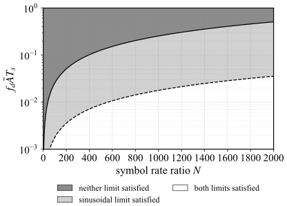
Figure 2.5 aligns with intuitive expectations, demonstrating that the system cannot simultaneously support an excessively large frequency deviation and a high subprotocol rate. Instead, a fundamental trade-off governs these two parameters. Reducing the frequency deviation allows for a higher relative symbol rate in the subprotocol; however, as indicated by (2.52), this increased rate comes at the expense of degrading the signal-to-noise ratio at the subprotocol detector’s input. Conversely, employing a higher frequency deviation restricts the subprotocol to a lower relative symbol rate, but consequently improves the signal-to-noise ratio at the detector.
The subprotocol pulse train (2.4) is neither a sinusoid nor is it a Gaussian random process for equally likely, iid symbols. The subprotocol pulse train is “more random” than a sinusoid, but “less random” than the assumed Gaussian random process that led to the modulation bound (2.78). Consequently, one expects the FLE subprotocol to behave somewhere in between these two cases; the lock boundary is somewhere in the light-gray area in the figure. Chapter 3 measures this boundary directly.
2.2.4 Consequences of the Lock Limits
Taken together with the subprotocol signal-to-noise ratio (2.52), the common form (2.80) yields three observations about the shape of the resulting operating region, each of which is revisited against measurement in Chapter 3.
First, the maximum admissible normalized deviation grows linearly in . This is a direct consequence of the unity-DC-gain normalization: because the peak and RMS excursions of are set by alone and do not depend on , the only place the subprotocol symbol rate enters the bound is through the modulating frequency . Halving the subprotocol rate halves the rate of change the loop must follow and therefore doubles the deviation it can absorb.
Second, and more consequentially for system design, the admissible deviation grows as . A receiver with a wider carrier tracking loop—which is the usual choice for robust operation under Doppler and oscillator uncertainty—admits quadratically more subprotocol capacity. The margin that FLE consumes is therefore not a fixed quantity but one that grows with the base protocol’s own robustness: the more defensively the primary link is engineered, the more room the subprotocol has to work in. A link designed for a benign channel leaves little for FLE to use, while one designed for a hostile one leaves a great deal.
Third, the two limits bound the answer from both sides but do not determine it, since the pulse train is neither of the two modulation models Gardner analyzed. The measured boundary is therefore expected to lie between them.
Finally, it is reasonable to ask why the same margin could not simply be reclaimed by narrowing the synchronization loop instead of overlaying a subprotocol on it. Equation (2.39) shows what that would buy. Reducing lowers the base protocol’s phase jitter, which yields a marginal bit error rate improvement; that improvement can be converted into throughput only by renegotiating the modulation and coding scheme with an associated peer, and it is paid for with longer acquisition time and a smaller pull-in range. FLE converts the same margin into bits that are legible to any receiver capable of estimating carrier frequency offset, whether or not that receiver is associated, keyed, or able to demodulate the payload at all. The two uses of the margin are therefore not interchangeable, and they are not even addressed to the same audience: narrowing the loop pays a dividend to the link that already exists, whereas FLE pays one to the links that do not.
2.3 Extension to Multi-Carrier
With the single-carrier system description in place, the multi-carrier system is straightforward to describe. The key conceptual difference is the mechanism the base protocol uses to estimate carrier frequency offset (CFO): a single-carrier receiver tracks the carrier phase continuously with a per-symbol PLL, whereas an orthogonal frequency-division multiplexing (OFDM) receiver estimates the CFO at most once per OFDM symbol, using either a dedicated preamble or embedded pilot subcarriers [27]–[29]. The FLE subprotocol attaches to whatever CFO observable the base protocol produces; the only change relative to the single-carrier model is the rate and the statistics of that observable.
2.3.1 Signal Model
Consider an OFDM base protocol with active subcarriers, subcarrier spacing , useful (IFFT) symbol duration , and cyclic prefix (CP) duration , so that the OFDM symbol duration is . Let denote the constellation point applied to the -th subcarrier of the -th OFDM symbol. In place of the primary pulse train of the single-carrier model, the base protocol forms each OFDM symbol with the inverse FFT, producing the complex-valued lowpass equivalent waveform
where is the rectangular (or windowed) OFDM symbol-shaping pulse of duration that includes the cyclic prefix. Exactly as in the single-carrier case (2.3), the FLE subprotocol perturbs the up-conversion with the subprotocol phase of (2.6)–(2.8):
To preserve subcarrier orthogonality, the residual frequency deviation seen within any single OFDM symbol must be small compared with the subcarrier spacing, i.e., ; otherwise the perturbation introduces inter-carrier interference (ICI) that degrades the base protocol [27], [30]. This is the multi-carrier analogue of the single-carrier requirement that the carrier phase PLL track without significant degradation.
2.3.2 Detection
The OFDM detector differs fundamentally from the single-carrier detector. Detection is performed on blocks of received samples: the CP is discarded, the FFT of each block is computed, and primary symbol decisions are made on a subcarrier-by-subcarrier basis. A residual CFO that is constant over an OFDM symbol rotates the -th symbol’s subcarriers by a common phase and, to first order, scales each subcarrier by while leaking energy into adjacent subcarriers [30]. The base protocol estimates and removes this CFO; the resulting per-symbol CFO estimate is the observable from which the secondary data is recovered.
Let denote the CFO estimate produced for the -th OFDM symbol. Because the subprotocol phase varies slowly relative to the base-protocol carrier, is a sample of the instantaneous frequency averaged over the -th OFDM symbol,
where is the frequency-estimation error. Comparing (2.85) with the single-carrier result (2.44), the per-OFDM-symbol CFO estimate plays exactly the role of the PLL loop-filter output : it is a scaled, noisy sample of the subprotocol pulse train (2.4), but now the sample period is the OFDM symbol duration rather than the base-protocol symbol time . The secondary detector therefore reuses the single-carrier structure: the sequence is applied to a filter matched to the subprotocol pulse shape (now sampled at rate ) and decimated to the subprotocol symbol rate.
The consequence is a hard upper bound on the secondary symbol rate. Because a CFO estimate is available at most once per OFDM symbol, the maximum secondary symbol rate is one secondary symbol per OFDM symbol,
Here is reinterpreted as the number of OFDM symbols per secondary symbol, the multi-carrier counterpart of the oversampling ratio defined in (2.9). Two regimes of operation follow from how the base protocol produces its CFO estimates: a constant (continuous) transmission mode and a burst mode.
2.3.3 Constant (Continuous) Transmission Mode
In continuously transmitted, framed systems (e.g., the LTE/5G-NR downlink) the base protocol embeds reference (pilot) resource elements at a regular cadence and tracks residual CFO and phase noise across OFDM symbols [28], [31], [32]. Because transmission never stops, the phase can be tracked with a PLL in exactly the manner analyzed in the single-carrier case, with one substitution: the error-signal update rate is set by the temporal spacing of the pilots used to form the phase/frequency error, rather than by the base-protocol symbol time. All of the single-carrier tracking results carry over under the replacement (with when every OFDM symbol carries pilots). In particular, the phase-jitter relationship (2.39) becomes
and the lock limits (2.64) and (2.77) apply with replaced by the pilot spacing and . The same trade-off identified for the single-carrier case holds: a smaller pilot spacing permits a faster secondary symbol rate but reduces the SNR available to the secondary detector through the noise bandwidth of the tracking loop. Low-update-rate PLL designs suited to this pilot-driven tracking are treated in [31].
2.3.4 Burst Mode
In burst-mode systems (e.g., IEEE 802.11a/g/n) each transmission is a self-contained burst preceded by a preamble. The preamble—the short and long training sequences (STS/LTS) in 802.11—is used for burst detection, symbol-timing synchronization, channel estimation, and frequency-offset estimation [29]. Two secondary-channel strategies are available, differing in how much of the per-OFDM-symbol structure can be exploited.
Static offset per burst. The simplest strategy applies a single static frequency shift to the entire burst, encoding one secondary symbol per burst. This is discussed and analyzed in more detail in Chapter 4. The receiver recovers the secondary symbol directly from the preamble’s frequency-offset estimate, for example via the Schmidl–Cox estimator applied to the repeated training symbols [29], or via the autocorrelation of the long training sequence. Because the estimate is formed from the (relatively long) preamble, the frequency-estimation error is small, so the effective secondary SNR is high; the cost is the lowest possible secondary rate of one symbol per burst.
Intra-burst tracking. A higher-rate strategy applies a slowly time-varying phase across the burst and tracks the offset from OFDM symbol to OFDM symbol using the pilot subcarriers embedded in each data symbol [27], [28], [31]. A low-update-rate PLL or per-symbol pilot-based frequency estimator produces one CFO sample per OFDM symbol, recovering the per-symbol observable of (2.85). The secondary rate can then approach the bound (2.86) of one secondary symbol per OFDM symbol, at the cost of the noisier per-symbol (rather than per-preamble) frequency estimates. An intermediate alternative injects an independent static offset on each OFDM symbol and computes an independent frequency-offset estimate per symbol [33].
2.3.5 Rate–Resolution Trade-off
In all multi-carrier modes the secondary symbol rate is bounded above by the CFO-estimation rate—at most once per OFDM symbol (2.86)—even when the underlying protocol could in principle estimate more often. This is more restrictive than the single-carrier case, where the loop produces an estimate every base-protocol symbol. The compensating benefit is that the longer OFDM symbol (and longer secondary symbol) duration permits more accurate frequency estimation: the frequency-estimation variance of a maximum-likelihood estimator scales inversely with the cube of the observation length [34]. The improved frequency resolution allows the secondary channel to use higher-order -ary frequency-shift constellations, recovering some of the throughput that would otherwise be lost to the reduced symbol rate. This is a deliberate exchange of temporal resolution for frequency resolution—the same design philosophy that motivates multi-carrier modulation itself. While most modern multi-carrier receivers do not implement a literal PLL, FLE remains applicable by reading whatever CFO observable the base protocol exposes (a frequency-domain pilot-based estimate, a preamble estimate, or a tracking-loop state), and the high-level detection procedure is unchanged.
3 Simulation
The analysis in the previous chapter provides intuition regarding how the key design parameters, and , affect the performance of both protocols, establishing theoretical boundaries for carrier phase PLL lock. We now determine a more precise set of bounds numerically, integrating real-world factors such as channel impairments, timing synchronization, and protocol overhead. To achieve this, we simulate the complete primary and subprotocol transmit and receive chains, evaluating their performance across a variety of channel models. These simulations are built upon representative single- and multi-carrier underlying protocols. We begin with the foundational AWGN model to sweep across a range of design parameters. Subsequently, we expand our evaluation to standardized ITU [35]a models to incorporate multipath and frequency-selective fading effects.
3.1 System Design
To demonstrate the performance of the single-carrier FLE, we create a GNU Radio implementation, shown in Figure 3.1. The primary signal is QPSK with the square-root raised-cosine (SRRC) pulse shape with unity DC gain and 50% excess bandwidth, and the secondary signal is a binary PAM pulse train using the SRRC pulse shape with 100% excess bandwidth. For computer simulation in the AWGN environment, we add noise with GNU Radio’s channel model block. To evaluate frequency-selective fading, we extend the flowgraph with simulated Tapped Delay Line (TDL) channels configured to ITU specifications. On the primary channel, the receiver recovers symbol timing with the Gardner timing error detector [23] and a Farrow interpolator, and carrier phase with a second-order PLL at a closed-loop equivalent bandwidth cycles/symbol. The secondary detector is the matched filter followed by a second symbol timing synchronizer using the same Gardner timing error detector and Farrow interpolator. We sweep and over a range of values and report the results in Section 3.2.
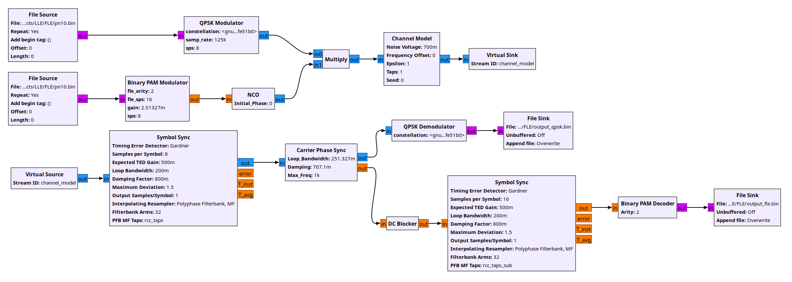
As an example of multi-carrier operation, we use OFDM bursts following the IEEE 802.11 standard. The transmitter injects a frequency offset proportional to the secondary channel PAM symbol into each burst, producing a secondary channel data rate equivalent to one -ary secondary channel symbol per OFDM burst. At the receiver, the Schmidl–Cox algorithm [29] operates on each long training sequence (LTS) to detect the secondary channel symbol.
Section 3.2 describes the experiments with different frequency offsets and different values of under both AWGN and ITU channel models.
3.2 Evaluation
In our evaluation, we seek to answer four main questions:
Does FLE affect the performance of the primary communication link?
Under what conditions can the secondary channel be reliably decoded?
How do the FLE parameters and affect system performance?
How robust is the FLE subprotocol when exposed to real-world multipath delay spread?
Performance is measured using bit error rate (BER) as a function of for both the primary and secondary protocols, calculated with the bit energy of the primary protocol.
3.2.1 Single-Carrier Performance
After extensive simulation, we find that although FLE parameters can influence QPSK performance, their impact on the primary protocol remains minimal provided the parameters lie within a defined operating envelope. Figure 3.2(a) shows the BER performance of QPSK under four different FLE configurations, along with a baseline case in which FLE is absent. For reference, the theoretical BER curve under additive white Gaussian noise (AWGN) is also included. The observed implementation loss is attributable to the simulation tooling rather than the presence of the subprotocol. Nearly all simulated curves, including the no-FLE case, follow the same trajectory. Only when parameters are pushed to extreme values (e.g., and ) does a slight degradation appear; even in this case, the degradation is limited to approximately 1 dB in . To identify the bounds of this stability envelope, we perform a parameter sweep, shown in Figure 3.2(b). Primary protocol reception remains near perfect below a clear boundary in the – plane, indicating a wide operating region where FLE can coexist with QPSK without significant impact.
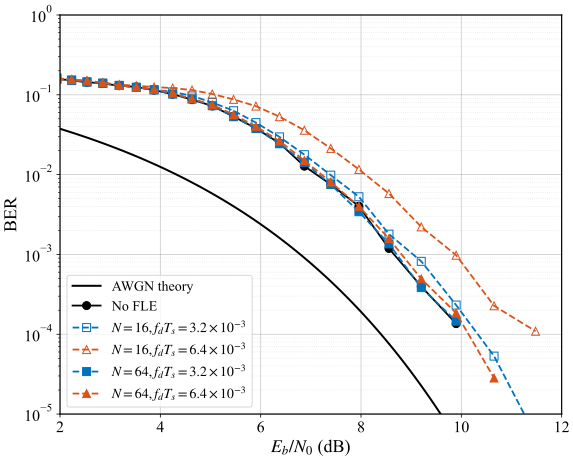
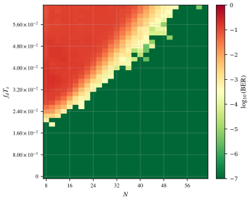
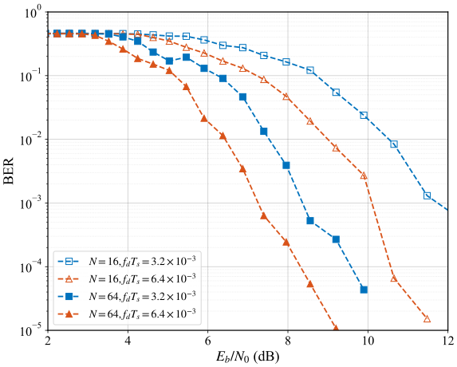
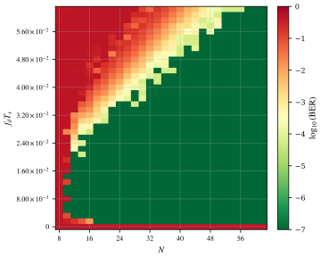
In contrast, the effect of FLE parameters on the subprotocol is more prominent. As shown in Figure 3.2(c), both and strongly affect the BER performance of FLE. Increasing these parameters improves subprotocol detectability, but excessive values lead to degradation of the primary protocol, presenting a trade-off to the end user.
Importantly, there exists an overlap region where both the primary protocol and the FLE subprotocol achieve high performance. This is evident from the FLE parameter sweep in Figure 3.2(d). If is too small, the subprotocol signal is lost in the noise floor; if is too low, the PLL cannot reliably lock and track the induced frequency changes. Optimal performance is achieved through a balanced combination of these two parameters. To visualize this stable operating envelope, we overlay the primary and subprotocol BER in Figure 3.3. We present the following as a design rule. We first take the intersection of the primary protocol and subprotocol stability regions and then apply a conservative linear fit to the boundary. This places the operating envelope at:
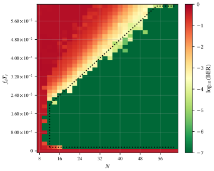
For reference, this operating region is now shown against the mathematical bounds computed in the previous chapter as Figure 3.4. The previous analysis only found the bounds on the carrier phase PLL lock. This operating envelope also takes into account the SNR of the subprotocol (i.e., if is too low, the subprotocol has very little SNR and is therefore not decodable).
Each of the three edges of (3.1) corresponds to a distinct mechanism identified in Chapter 2, and it is worth taking them in turn, because the envelope is not a single phenomenon but three superimposed ones.
The sloped upper edge is the lock limit. It is linear in as (2.80) predicts. Doubling halves the modulating frequency and therefore doubles the deviation the loop can follow. Above this edge the base protocol is the layer that fails—the carrier phase PLL slips cycles—and the subprotocol fails with it, since the observable it is read from is the loop that has just lost lock. This represents the principal trade-off with FLE. There is a linear trade-off between subtlety in frequency deviation and speed of the subprotocol.
The horizontal lower edge at comes from the subprotocol signal-to-noise ratio (2.52) rather than from any lock condition. Below it the deviation is simply too small to lift the subprotocol pulse train clear of the loop-filter noise , and the subprotocol bit error rate collapses while the base protocol remains entirely untouched. That this edge is flat—independent of —is itself predicted by (2.52): the ratio depends on , on , and on the base protocol’s , but not on the subprotocol symbol rate. The detection floor is therefore a property of the deviation and the loop, not of how fast the subprotocol is run.
The vertical edge at is the one the lock limits do not predict, and its absence from (2.80) is not an oversight: those limits bound base-protocol integrity, whereas this edge is a subprotocol reception failure. It is the bandwidth condition on the differentiator approximation (2.41) discussed in Chapter 2. Below the subprotocol pulse train is no longer narrow compared with the closed-loop bandwidth of the PLL, so the loop stops behaving as a flat differentiator and instead smears the pulse train it is supposed to reproduce. Empirically this edge is found to be abrupt. The subprotocol fails over a single step in rather than degrading gradually.
Read together, the three edges say that the usable region is bounded above by the base protocol’s tolerance and below and to the left by the subprotocol’s own detectability. The lock limits alone describe only the first of these, which is why the analytical bounds of Chapter 2 are necessary but not sufficient to place the operating point.
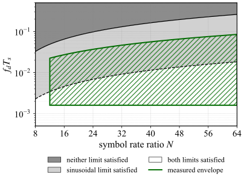
3.2.2 Multi-Carrier Performance
Similar evaluations are performed on the multi-carrier system with several key differences. Both 16-QAM and 64-QAM OFDM symbols are tested to determine whether FLE performance varies with the order of the OFDM constellation and to model both high- and low-data-rate modulations.
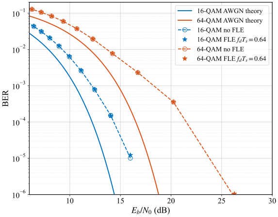
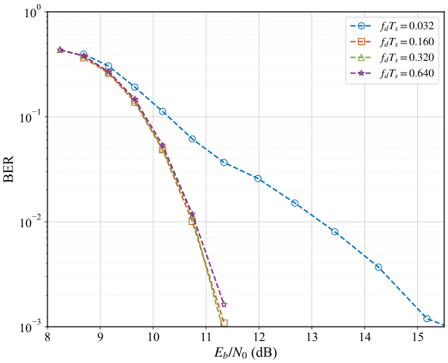
Because FLE symbols are applied at the burst level in the multi-carrier system, the parameter , defined as the ratio of primary to subprotocol symbols, no longer has a meaningful interpretation. Instead, performance is characterized primarily by the magnitude of the normalized frequency shift, . As shown in Figure 3.5(a), the presence or absence of FLE has very little effect on the BER trajectory of the OFDM system. While we again see implementation loss from the simulation tooling, this loss is not due to the subprotocol. In the 64-QAM case, we observe a small performance difference with and without the FLE overlay (approximately 0.5% in the worst case); however, this degradation is negligible. We find that any value of within a stable operating envelope produces a similar effect on the primary protocol. The upper bound of this envelope occurs when the carrier phase synchronization algorithm can no longer reliably correct the induced frequency offset. For the system considered here, which employs the Schmidl–Cox algorithm, this limit is observed at .
The effect of on the subprotocol is shown in Figure 3.5(b). These results correspond to 4-ary FLE symbols operating on top of a primary protocol employing a 64-QAM constellation. Once exceeds the noise floor of the CFO estimator, further increases provide minimal improvement in BER. A lower bound on the stability envelope for the multi-carrier system is observed at . To maximize subprotocol data rate, higher-order frequency-shift constellations can be employed. At a conservative operating point, where the frequency separation between adjacent subprotocol symbols is , reliable operation is achieved with modulation orders up to 32-ary PAM.
3.3 Complex Environments
The preceding evaluation establishes the operating envelope of FLE under idealized AWGN conditions, answering Questions 1–3. We now turn to Question 4: how robust is the subprotocol under realistic multipath propagation? To this end, we subject the same single- and multi-carrier systems to standardized ITU channel models, specifically the Extended Pedestrian A (EPA) and Extended Vehicular A (EVA) delay profiles [35]. EPA represents a mild pedestrian scenario with seven taps spanning 410 ns of delay spread, while EVA models a more severe vehicular environment with nine taps and a maximum excess delay of 2.51 s. Both profiles are implemented as TDL channels with randomized tap phases, producing independent static fading snapshots for each trial. All sweeps use an SNR of dB, identical to the AWGN baseline.
Because fading channels introduce stochastic variation—a single channel realization may place a deep spectral null near the carrier frequency, preventing lock, while an adjacent realization may produce a benign response—we employ a Monte Carlo approach with 10 independent trials per cell for the fading channels (EPA and EVA), each with a different initial phase. We compare these against the deterministic AWGN baseline sweep of Section 3.2.1. This design allows us to report the mean BER at each operating point from which we calculate the probability of achieving PLL lock (which we define as BER ). This provides a more complete characterization of the fading operating envelope than any single realization can offer.
3.3.1 Channel Effect on Subprotocol
For the single-carrier system, the introduction of multipath fading significantly stresses the synchronization loops. The carrier phase PLL must now track not only thermal noise and FLE frequency deviations, but also the phase rotations introduced by the multipath taps. We find the latter noise source to be the dominating factor as shown below. Figure 3.6 presents the parameter-space heatmaps under all three channel conditions, where each cell now represents the mean BER averaged over 10 independent channel realizations for the multipath channels.
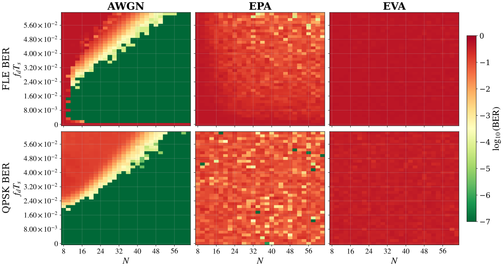
Under AWGN, the single-trial sweep produces a smooth, repeatable contour, with no mixed outcomes due to the deterministic channel. Under EPA, the envelope contracts sharply: only 0.5% of cells achieved lock on all 10 trials, while 54.9% exhibited mixed outcomes—sometimes locking, sometimes failing, depending entirely on the particular channel draw. This stochasticity is evident in the speckled EPA panels of Figure 3.6, where adjacent cells differ sharply, in contrast to the smooth contour of the deterministic AWGN sweep. Under EVA, the envelope collapses entirely: no cells achieved lock on all trials, and only 0.9% ever locked at all. The mean FLE BER reached 0.458, approaching the random-guessing floor. A Kruskal–Wallis test confirmed the channel as the dominant factor in FLE decodability (, ). These results are summarized in Table 3.1.
| Metric | AWGN | EPA | EVA |
|---|---|---|---|
| Mean FLE BER | 0.046 | 0.185 | 0.458 |
| Overall lock rate | 78.3% | 22.2% | 0.1% |
| Cells that always lock | 78.3% | 0.5% | 0.0% |
| Cells with mixed outcomes | 0.0% | 54.9% | 0.9% |
| Mean QPSK BER | 0.022 | 0.084 | 0.360 |
The multi-carrier system tells a dramatically different story. The cyclic prefix absorbs any inter-symbol interference introduced by the multipath environment. This, coupled with per-subcarrier equalization, recovers the QAM payloads much more accurately than the single-carrier equivalent. Furthermore, because the mechanism used for our multi-carrier simulation relies on a per-packet frequency offset, the CFO estimation is highly robust, deriving from the STS and LTS of the 802.11 preamble. Unsurprisingly, and as shown in Figure 3.7, FLE achieves perfect decoding (BER ) across all tested values under both EPA and EVA. The multipath channel that destroys single-carrier FLE has virtually no effect on the multi-carrier variant.
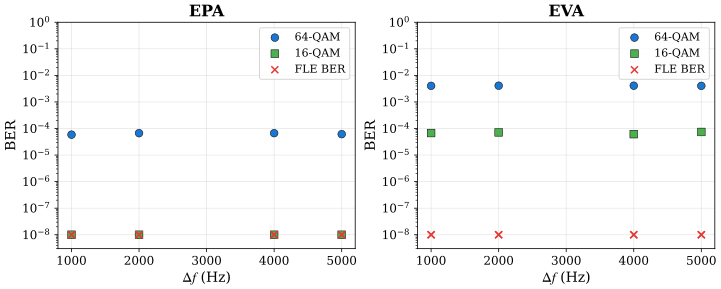
3.3.2 Effect of the Subprotocol on the Primary Protocol
Having established that the channel degrades single-carrier FLE while leaving multi-carrier FLE unaffected, we now ask whether the presence of FLE worsens the primary protocol under these harsher conditions. This is the central question for system design: even if the subprotocol itself fails, it must not take the primary link down with it. The dataset provides 23,520 total observations, yielding substantial statistical power to detect even small interaction effects. As we show below, the answer has two layers: FLE is transparent to the primary protocol on average, yet its parameters and the channel genuinely interact in shaping how the carrier phase PLL acquires lock.
Figure 3.8 compares QPSK BER distributions with FLE off () versus FLE active () across all three channels. The overlap of the distributions is striking. We conduct a Type II two-way ANOVA on QPSK BER, treating FLE state (active vs. off) and channel as factors and identify the channel model as the sole significant factor (, , ). Neither the FLE main effect () nor the FLE channel interaction () reaches significance. On average, the mere presence of the subprotocol neither degrades the primary protocol nor amplifies the channel’s degradation; FLE is transparent to the primary link in the aggregate, as the overlap of the FLE-off and FLE-active distributions in Figure 3.8 makes plain.
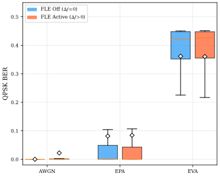
While the aggregate statistics show no interaction between FLE and the channel on primary link performance, a closer look reveals a real physical interaction between the FLE parameters and the channel that dictates exactly where the carrier phase PLL acquires lock. Because the temporal span of the subprotocol symbols can approach the characteristic delays of the channel taps, delayed copies of the signal arrive and overlap across the FLE symbol boundaries. This temporal smearing effectively low-pass filters or “rounds out” the abrupt, extreme phase transitions that occur at the edges of the frequency-shifted symbols.
This rounding effect explains the distinct presence of “rescue cells” in the parameter space. Under AWGN, 260 active configurations drove QPSK out of lock—all concentrated at high frequency deviations (), where clean, sharp phase transitions consistently provoke cycle slips. Yet under the EPA channel, every one of these configurations recovered lock in at least one realization, and 220 locked in the majority of realizations. Because the multipath taps smooth the transition boundaries, they significantly reduce the peak instantaneous phase derivatives presented to the loop filter. The channel effectively rescues the primary link from configurations that would predictably force a cycle slip in a clean environment.
This rescue is uniquely an EPA phenomenon: under EVA, the delay spread is so severe that the PLL is saturated by the channel itself. Only 60 of the 260 cells ever recovered, and then only sporadically. Once fading dominates, the multipath-induced phase and amplitude fluctuations dwarf the FLE deviations entirely, rendering the subprotocol’s perturbation undetectable.
It is worth noting that for the single-carrier system, the question of whether the primary protocol is disproportionately affected by the subprotocol in these complex environments is largely moot. In practice, a bare-bones single-carrier protocol would not be deployed in such harsh multipath conditions, as the standard PLL already experiences severe difficulty acquiring and maintaining lock.
For the multi-carrier system, the previous conclusions hold. The OFDM payload experiences the expected modulation-order-dependent degradation—64-QAM BER rises from under EPA to under EVA—but this degradation shows no correlation with (Spearman , for EPA; , for EVA). The OFDM payload remains entirely unaffected by the subprotocol’s presence. One could imagine a “straw that broke the camel’s back” scenario in which the multi-carrier link is already teetering on the edge of failure, and the small, added frequency offset of the subprotocol finally breaks it. However, encountering an environment balanced so precisely on this precipice is exceptionally rare. Modern OFDM systems typically employ robust rate adaptation, dynamically downshifting to a lower-order modulation scheme well before a fractional frequency offset becomes the dominant cause of failure. Furthermore, the residual phase errors introduced by FLE are easily absorbed by the continuous phase tracking of the pilot subcarriers, meaning that if the link drops, it is almost certainly due to deep multipath fading rather than the subprotocol. Should such a highly specific marginal condition arise, higher-layer feedback could simply instruct the transmitter to temporarily cease subprotocol transmissions.
3.3.3 Summary
The Monte Carlo evaluation across complex channel models supports a three-part conclusion. First, the single-carrier FLE subprotocol is sensitive to the propagation environment: the lock envelope contracts from a 78.3% rate under AWGN to 22.2% under EPA—with 54.9% of EPA cells exhibiting stochastic, realization-dependent locking—and collapses to 0.1% under EVA. The multi-carrier variant, by contrast, is immune; it leverages the robust CFO estimation to achieve perfect FLE decoding even under the most severe delay profile. Second, the presence of FLE does not degrade the primary protocol on average. For the single-carrier system, the FLE-on and FLE-off QPSK distributions remain statistically indistinguishable under fading. For the multi-carrier system, the OFDM payload is entirely unaffected by the subprotocol, with marginal failure scenarios being exceedingly rare and easily mitigated. Third, there exists a real physical interaction between the frequency shift parameters and the channel that dictates exactly where the carrier phase PLL acquires lock. Under AWGN, sharp, extreme phase transitions at high frequency deviations reliably provoke cycle slips; however, the temporal smearing of the EPA delay spread smooths these transition boundaries, rescuing the primary link in precisely the configurations where a clean channel fails. The channel and the subprotocol thus interact in shaping the parameter space of the primary lock, but this interaction redistributes rather than amplifies error, leaving FLE transparent to the primary protocol in the aggregate.
4 Implementation
Having established the mathematical foundation of FLE in Chapter 2 and validated it through simulation in Chapter 3, we now realize the system over the air. We begin with SDR experiments that confirm FLE works as predicted, but SDRs are laboratory instruments, not consumer devices. For potential applications, an implementation on 802.11 Wi-Fi commercial off-the-shelf (COTS) hardware is extremely desirable. This chapter introduces the adaptation of FLE for COTS hardware and addresses the unique chain of challenges that such an implementation encounters. The end result is a fully functional FLE transmitter and receiver that works completely in software on COTS devices. The evaluation of this complete system under real-world conditions is presented in Chapter 5 alongside two applications.
4.1 SDR Implementation
Using the same GRC environment outlined in Section 3.1, we transmit our FLE overlay over the air in real-time on top of both single-carrier and multi-carrier modulations, as shown in Figure 4.1. We use two USRP B210 SDRs as the transmitter and receiver of the primary protocol, labeled Primary TX and Primary RX in the figure. The transmitter is configured to concurrently transmit FLE data. We use the ADALM-Pluto SDR as a secondary RX, which passively monitors the transmission and extracts only the FLE information embedded as frequency offsets. Using the relatively inexpensive Pluto SDR shows the low barrier to entry for our protocol and the universality of this design across different hardware capabilities. For our over-the-air experiments, we transmit over the unlicensed 915 MHz band.
4.1.1 Over-the-Air Tests
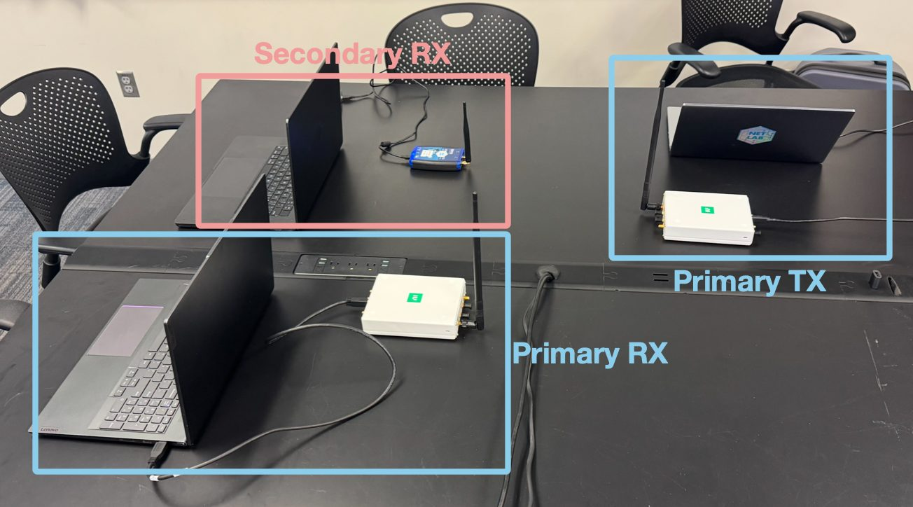
For the over-the-air experiments, we select robust operating parameters from the simulation results for both the single-carrier and multi-carrier systems. These experiments serve as a preliminary feasibility study, not a full validation, since the desired end result is on different hardware. The specific parameters used are as follows:
Single-Carrier: Primary protocol = QPSK, ,
Multi-Carrier: Primary protocol = 16-QAM, subprotocol = 4-ary PAM,
We conducted experiments at transmitter–receiver separations of 1 m and 20 m. At the shorter distance, both the primary and secondary protocols achieved near-perfect reception in the single-carrier and multi-carrier configurations, as expected. At the increased separation, the single-carrier system continued to exhibit excellent performance, with both the primary protocol and the subprotocol achieving measured BERs on the order of . In the multi-carrier system, the primary protocol experienced a higher BER due to the use of a higher-order constellation.
Although the observed BERs were ultimately determined by the SNR conditions of the two scenarios, the key result is that the primary protocol and the subprotocol exhibited similar error-rate trends and operational ranges. This is precisely the behavior predicted by (2.52): the signal-to-noise ratio at the subprotocol detector is directly proportional to the of the base protocol, so the two channels track one another as the link budget changes rather than failing at independent thresholds. The subprotocol has no noise budget of its own; it borrows the base protocol’s, and the over-the-air measurements show it inheriting the base protocol’s operating range as a consequence. These experiments demonstrate that the secondary signaling layer can closely track the reliability of the underlying communication system while remaining effectively transparent to the primary protocol. In tested configurations, the subprotocol achieved data rates exceeding 900 kbps, with performance ultimately limited by the computational capability of the laptops running GNU Radio Companion rather than by the FLE mechanism itself.
4.2 COTS Hardware
The SDR experiments confirm that FLE works over the air, but SDRs offer complete control over the transmit chain—a luxury that consumer hardware does not provide. The next step is to demonstrate FLE on commercial off-the-shelf (COTS) devices where the radio is managed by a closed-source firmware stack. We use two ESP32-C5 microcontrollers as the transmitter and receiver, and show that controlled frequency impairments can be introduced and detected exclusively via software, requiring no hardware modifications.a As we will see, solving the physical-layer access problem is only the first step: the full IEEE 802.11ax MAC layer introduces a cascade of timing and channel challenges that do not exist on an SDR.
4.2.1 FLE COTS Physical Layer
Every modern Wi-Fi receiver maintains a real-time estimate of the carrier-frequency offset (CFO) between itself and the incoming transmitter to prevent inter-carrier interference caused by local oscillator mismatch. This offset arises from crystal tolerances and Doppler effects and is normally corrected transparently by the receiver’s automatic frequency correction (AFC) loop. In a modern Wi-Fi stack, this is done using the short training sequence (STS) and long training sequence (LTS) at the beginning of an IEEE 802.11 burst.
The STS consists of 10 identical repetitions. These repetitions allow the receiver to perform a rapid, coarse CFO estimation without phase ambiguity. Let denote the received discrete-time baseband signal. By calculating the autocorrelation between adjacent STS repetitions separated by samples, the receiver estimates the coarse frequency offset [29]:
where is the sampling period. Once this coarse offset is compensated for in the time domain, the receiver uses the LTS for fine CFO estimation.
The LTS consists of a long guard interval followed by two identical, full-length OFDM symbols. Because these two symbols are transmitted consecutively and separated by samples (e.g., for a standard 20 MHz channel), any remaining phase drift between the first and second symbol is strictly due to the residual frequency offset. The receiver computes the autocorrelation between the corresponding samples of the two LTS symbols:
The phase of this autocorrelation represents the total phase rotation over the duration of one LTS sequence. The fine CFO, , is mathematically derived as [36]:
Both estimators are instances of the maximum-likelihood autocorrelation-based frequency estimator. The estimation variance as a function of SNR follows from the statistics of the autocorrelation phase [36]:
where is the correlation lag in samples ( or ) and is the number of sample pairs in the summation. At moderate-to-high SNR the second term vanishes and the variance decreases inversely with SNR, so the CFO estimate exploited by FLE grows more precise as link quality improves—the same relationship derived for the phase estimate in (2.52), here reduced further by the robust LTS/STS training sequence.
The key detail is that a method of very precise frequency estimation and correction is innate to the structure of the Wi-Fi stack. Just as with any wireless protocol, we can leverage this process to enable a subprotocol channel.
4.2.2 Hardware Register Manipulation
By default, the ESP32 family of microcontrollers does not expose RF statistics regarding the CFO to the application layer. These calculations are executed directly within the silicon, typically requiring no software interface. However, we discovered that during the AFC process, the hardware records the CFO of each incoming packet into a dedicated hardware register. By accessing this register at the correct stage of the reception pipeline, we can accurately detect the FLE signal.
Furthermore, the ESP32 silicon contains a fractional- divider responsible for tuning the 2.4 GHz and 5 GHz oscillators. While this divider is normally managed by the closed-source Wi-Fi stack binary via a control register, we were able to experimentally map its behavior. By writing a wide range of values to this register and measuring the induced CFO using an SDR, we characterized the exact frequency offsets produced. These induced offsets are highly reliable and repeatable. Figure 4.2 shows the successful mapping to produce a wide range of desired frequency offsets as measured by a highly reliable USRP X410 SDR.b By leveraging these two undocumented registers, we successfully implemented both an FLE transmitter and receiver entirely in software.
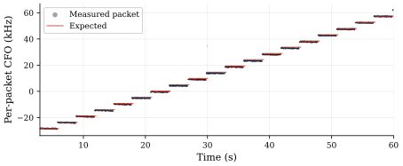
The transmitter tunes the microcontroller’s oscillator across a wide range of values to transmit symbols from , its alphabet of -ary symbols, with high precision. Upon packet detection, the receiver simply reads the designated hardware register to extract its CFO estimate.
4.2.3 The Observation Channel
With both registers in hand, the subprotocol has a viable COTS transmitter and a receiver. We now turn to describing the channel it must use, which is unusual in several respects. Every received Wi-Fi packet leaves behind exactly one CFO reading, which consists of the FLE symbol, noise, and thermal and electrical effects from the two oscillators. The estimation noise of (4.4) is only one component of the offset the receiver actually observes. Over a run of received packets indexed by , the measured offset decomposes into a static term, two slowly-varying terms, and the estimation noise:
The static offset is a fixed bias from crystal tolerance—measured between roughly and Hz across our devices—that is constant over a session. The thermal drift is a slow, near-deterministic trend as the oscillator warms, on the order of tens of hertz per second (about 23 Hz/s on average, and as steep as 135 Hz/s within a single frame in our measurements), evolving over minutes. The random wander is a zero-mean, temporally correlated meander from oscillator phase and flicker noise, with a standard deviation of roughly 150–300 Hz and a correlation time of one to two seconds. Only the final term is an independent per-packet error, with the variance of (4.4) (a standard deviation near 500 Hz on a typical Wi-Fi link). This separation is what makes the channel tractable: the first three terms vary slowly and together form a wandering baseline that the receiver can track and subtract, while the last is a per-packet random error. The receiver’s treatment of each term is detailed in Chapter 5.
The other and more dominant characteristic of the FLE-on-COTS Wi-Fi channel is the symbol rate. Equation (2.86) dictates that the FLE symbol rate in a multi-carrier system is bounded by a minimum requirement of primary packet per FLE symbol. A COTS Wi-Fi implementation, however, cannot directly map FLE symbols to Wi-Fi packets because Wi-Fi traffic is inherently bursty. Although the Wi-Fi symbol time is fixed, the time between packets is not. Moreover, the MAC layer introduces additional uncertainty through channel sensing, Request-to-Send (RTS) and Clear-to-Send (CTS) exchanges, retransmissions, packet aggregation, and management frames associated with authentication, handshaking, and acknowledgments. Many of these events occur without the knowledge or control of higher-layer applications, making packet dispatch times impossible to predict. Consequently, neither a fixed FLE symbol rate based solely on the packet rate nor a symbol rate that varies directly with is practical.
Instead, the subprotocol symbol time must be chosen independently of , while still being informed by the traffic rate and other transmission characteristics. The subprotocol therefore runs on its own clock, selecting in advance and holding it for the duration of a frame. Primary Wi-Fi packets then fall wherever they occur within these symbol windows, and each FLE symbol is decoded from whatever CFO observations happen to be available during its window. The transmitter must therefore select to maximize the probability of successful symbol recovery. This predictable symbol clock produces a channel unlike a conventional wireless channel. Because a primary Wi-Fi packet is not guaranteed to occur in every symbol window, some windows contain no CFO observation at all.
In summary, the channel experiences two independent classes of impairments:
Analog impairments. Additive white Gaussian noise, multipath fading, crystal oscillator drift, and quantization noise in the CFO estimator produce random bit errors in the recovered symbols. These are the same impairments analyzed in Chapter 2 and are governed by the receiver signal-to-noise ratio, as quantified by (4.4).
PHY and MAC layer erasures. Contention backoffs, idle periods, and traffic gaps can leave a symbol window with no primary transmission from which to obtain a CFO observation. Because the transmitter and receiver share the FLE symbol clock, the location of every expected symbol is known. If no valid CFO sample is observed within a window, the receiver therefore marks that symbol as an erasure—an unknown value at a known index—rather than as an erroneous bit.
Critically, the second and dominant impairment makes the implementation an erasure-dominant channel rather than a deletion channel. With erasures, the position of every missing symbol remains known. This positional information allows an appropriate error-correcting code to recover from erasures more efficiently than from unknown-position deletions.
4.2.4 Traffic Characterization
To inform the selection of and any subsequent erasure-tolerant coding, we first examine the behavior of typical Wi-Fi device traffic. To that end, we captured real IEEE 802.11 traffic from commodity access points and client devices across six representative usage scenarios: a Zoom video call, a large file transfer, Instagram browsing, web surfing, YouTube streaming, and an access point serving multiple clients simultaneously. For these scenarios, we examine only the packets transmitted, and not received, by each device.c
Figure 4.3 presents the packet rate over time for each scenario, with individual packet arrivals shown as tick marks along the time axis. The contrast is immediate: Zoom produces a nearly continuous stream of codec frames with only mild fluctuations around the mean, while YouTube’s sparse bursts are separated by multi-second silences due to its buffering behavior. The large file transfer exhibits the highest peak rates, with TCP-driven bursts exceeding 1000 packets/s before dropping to zero during congestion-window resets. The remaining scenarios fall between these extremes, but none resemble a constant-rate source.
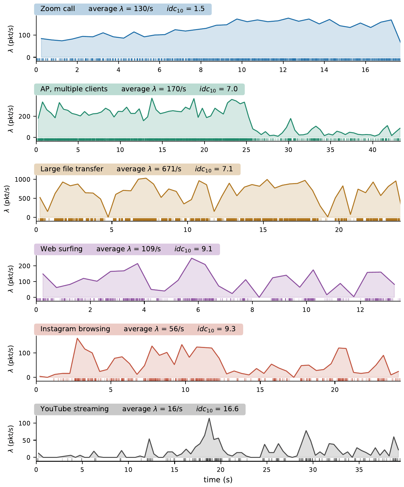
While the time-domain view illustrates the problem qualitatively, we ask a more precise question for the FLE-on-COTS implementation: for a given symbol period , what fraction of symbol windows will contain zero primary packets and therefore produce an erasure? Figure 4.4 plots this erasure probability as a function of for each scenario. At a symbol period of 50 ms, Zoom drops below 4% erasure probability, but YouTube still exceeds 70%. Even at ms—the slowest MCS in our system—YouTube erases half of all symbol slots. The large file transfer, despite averaging 671 packets/s, still erases a quarter of its slots at 25 ms, because its traffic arrives in intense bursts separated by quiet intervals rather than as a steady stream. These curves directly inform subprotocol parameter selection. A traffic pattern with a steep erasure curve can sustain a shorter symbol period and therefore a higher data rate, while a pattern with a shallow curve requires a longer period and heavier error-correction overhead.
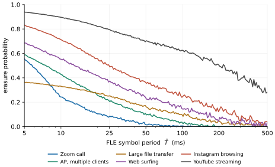
Channel Characterization Plane
The erasure curve is the quantity the subprotocol must survive, but it is not something the transmitter can look up. It is a whole curve, measured against symbol periods the transmitter has not chosen yet. What the transmitter needs is a small, fixed set of statistics from which those curves can be predicted. After examining over 90 statistics, we found that two are sufficient to explain 98% of the subprotocol transmission success rate.
The first is the mean rate , in packets per second. While the subprotocol cannot know the future of what the main protocol will transmit, this rate serves as a predictor of how many observations a symbol of a given duration can expect, . The second must describe the shape of the arrival process: how the same average rate is distributed in time. Two sources at identical can differ entirely in how their idle time is packaged, and a block code cares a great deal about the difference—twenty percent of slots erased uniformly is a far easier load than the same twenty percent arriving in contiguous runs.
This quantity is the index of dispersion for counts (IDC), the variance-to-mean ratio of the arrival count in a window. The IDC must be defined carefully, because a naive definition over a window of fixed duration inherits several defects. First, Wi-Fi traffic is approximately scale-free—the gap distribution follows a power law over the timescales of interest [37]—so the IDC measured over a window of duration climbs monotonically with and never plateaus. Across our captures it rises by nearly two orders of magnitude between window sizes of 25 ms and 30 s. Second, and more damaging for our purposes, a wall-clock window holds a number of packets proportional to the rate, so a fixed-duration IDC is not comparable between two sources of different .
Both defects disappear if the window is measured in packets rather than in seconds. We therefore define the dispersion of a carrier as the index of dispersion for counts over a window sized to hold ten arrivals on average, :
where is the number of packets observed in a window of duration . Because the window scales with the rate, is invariant to at fixed dimensionless arrival shape. A perfectly regular source has , and values grow with clustering. reveals whether those erasures will arrive as isolated events or as contiguous bursts.
Taken together, span a plane on which any prospective carrier can be placed with two measurements. Figure 4.5 locates the six captured scenarios on it, along with two engineered reference carriers that bracket what a COTS deployment can arrange deliberately rather than merely observe: a saturating constant stream at one packet every 10 ms, and an access point emitting nothing but beacons at the standard 102.4 ms interval. Both are exactly periodic, so both sit at , though in practical over-the-air scenarios with channel sensing and backoffs, these values are non-zero though very small.
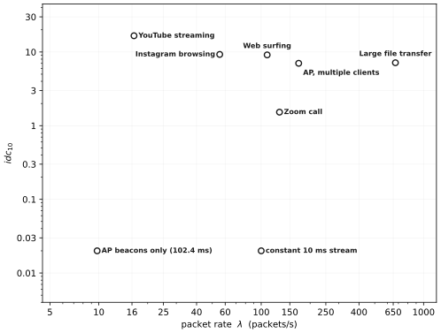
4.2.5 Transmit Rate Adaptation
To obtain both of these metrics on the ESP32, we leverage a hardware callback provided by the ESP32 SDK. The tx_done flag is asserted when the lower MAC finishes processing a transmit descriptor—an event that typically, but not necessarily, corresponds to a completed RF emission. Under queue saturation, the MAC may silently discard frames while still reporting success, though in practice these events are found to be rare.
The transmitter timestamps every tx_done callback during an observation window and reduces that timestamp series to exactly the two coordinates of Section 4.2.4: the mean rate and the dispersion of (4.6). Both are cheap—a counter and a single pass of variance accumulation over windows sized from the running rate estimate—and neither requires storing the timestamps themselves. The optimal FLE symbol period is then applied based on these statistics.
Figure 4.6 shows the first usage of this subprotocol symbol clock at , independent of the packet rate, once again measured with a USRP X410 SDR.
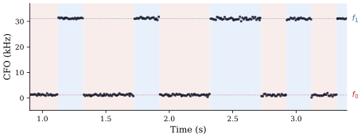
The decoupling of the packet rate and yields a powerful result. The FLE-on-COTS application does not need to know anything about the primary protocol’s traffic, because FLE-on-COTS can characterize it and dynamically adjust its own rate to match.
4.3 Coding for the Erasure Channel
Under the assumption of an erasure-prone channel, we employ a coding scheme tailored to such impairments, specifically Reed–Solomon (RS) codes over . These are provably optimal for this purpose.
The Singleton bound [38] establishes a fundamental limit on the minimum distance of any block code over a finite field of order :
A code that achieves this bound with equality is termed a maximum distance separable (MDS) code. Reed–Solomon codes are MDS [39]: for an RS code with parity symbols,
On a pure erasure channel, where the decoder knows the locations of all corrupted symbols, each erasure can be corrected with a single parity symbol. An RS code therefore corrects up to erasures:
Because of the Singleton bound (4.7), no code with parity symbols can correct more than erasures. RS codes are therefore optimal for erasure correction: they extract the maximum possible correction from every parity symbol.
On our specific channel, where both random bit errors () and positional erasures () coexist, the RS decoder’s correction capacity follows the well-known mixed bound [40]:
Each random error consumes two parity symbols—one to locate it, one to correct it—while each erasure consumes only one, since its location is already known. The decoder dynamically shares the parity budget across both impairment types, dedicating more capacity to erasures when the traffic pattern is bursty and more to random errors when the analog channel is noisy. Our implementation uses the Berlekamp–Massey algorithm [41] for key-equation solving and Forney’s algorithm [42] for error-value computation.
4.3.1 Block Interleaving
Reed–Solomon codes extract the maximum correction from every parity symbol—but this optimality is per-codeword. In practice, we found that RS coding alone is insufficient when MAC-layer erasures arrive in contiguous bursts. A single traffic gap spanning consecutive symbol slots would erase consecutive bytes in a serial codeword; if , the codeword is unrecoverable regardless of the code’s optimality. To distribute burst erasures across multiple independent codewords, we employ a two-dimensional block interleaving scheme.
The encoded data is arranged as a matrix where each of the rows is an independent RS codeword. The matrix is transmitted column-major: consecutive bytes on the air correspond to consecutive rows within the same column. A contiguous burst of erased bytes therefore scatters across distinct rows, with each row accumulating at most erasures. The worst-case correctable burst length is:
where is the per-row parity budget. This interleaving transforms a single catastrophic burst into a manageable per-row erasure load, enabling the system to survive traffic gaps far longer than any individual codeword could tolerate. The specific matrix geometry and its interaction with the packet architecture are detailed in Chapter 5.
The combination of RS coding and block interleaving provides a strong defense: the code is optimal for the erasure channel by the Singleton bound, and the interleaver ensures that the bursty erasure patterns characteristic of Wi-Fi traffic are presented to each codeword in a form the code can correct.
4.4 Summary
This chapter shows that FLE operates over the air in both single- and multi-carrier systems, from SDRs to COTS IEEE 802.11ax hardware. On the ESP32-C5, closed-source firmware requires reverse-engineering two undocumented registers for writing and reading the carrier offset. Because these offsets arrive independently of the subprotocol, FLE symbols cannot map directly to Wi-Fi packets. Instead, we decouple the FLE symbol clock from the base protocol. This makes erasures a function of the underlying traffic, which we characterize using two measurable parameters: rate and dispersion, obtained from the tx_done callback. These parameters determine the required Reed–Solomon coding and block interleaving to correct Wi-Fi’s bursty erasures. Together, physical-layer access, an independent symbol clock, traffic-aware rate adaptation, erasure coding, and interleaving enable FLE deployment on COTS hardware. Chapter 5 evaluates these techniques under real-world traffic and presents two FLE applications.
5 Applications
Chapter 4 established the COTS physical-layer adaptation, characterized the unusual channel it produces, identified the traffic observables that inform rate selection, and derived the coding needed to survive the resulting erasures. This chapter builds two applications of FLE on that substrate. Because the channel allows for a much lower data rate than the underlying traffic—delivered whenever the primary link happens to transmit—we begin by stating what a channel of that shape is for, so that the design decisions which follow can be read against the problems they are meant to serve. We then present UnderTone, which turns FLE into a complete general-purpose link on the ESP32-C5, and evaluate its performance over the air. Finally we present SpectralSeal, which applies FLE on the same COTS substrate to physical-layer access-point authentication, serving the third of the use cases named at the outset.
5.1 Motivating Use Cases
The channel that Chapter 4 produces has comparatively low throughput, on the order of tens to hundreds of bits per second. However, it costs no spectrum of its own, requires no modification to the IEEE 802.11 standard, and needs no cooperation from the network that either endpoint is attached to, because it is carried on traffic that was going to be sent regardless and is read from a quantity that every receiver already estimates.
That combination is a poor fit for moving data, and this work does not claim otherwise. It is a good fit for three use cases in which the obstacle has never been capacity. We state them ahead of the construction, because they are what the design choices in the remainder of the chapter are answerable to: a channel of this shape is worth engineering only if the thing one wants to send is small, tolerant of latency, and difficult to send any other way.
5.1.1 Spectrum Coordination
Devices that share a band frequently cannot communicate with one another. Two networks operating on the same channel, or a Wi-Fi network and an unrelated emitter nearby, have no common protocol through which to negotiate coexistence; carrier sensing arbitrates individual transmissions but cannot express intent. Proposals to do better generally assume a control channel, but a control channel is costly precisely because it requires additional spectrum, a standard, or both.
FLE provides such a channel without either. It rides on a carrier a device already emits, requiring no additional airtime, and is extracted from a quantity that receivers already estimate. The peer therefore needs no new protocol layer—only the ability to observe the signal. More importantly, FLE does not require network membership. An 802.11 frame is broadcast at the physical layer, while network membership is a MAC-layer abstraction that does not affect RF reception. A receiver can therefore extract an FLE stream from frames not addressed to it, from a different network, or while associated with no network at all. Section 5.2.5 enumerates the configurations this permits; for spectrum coordination, the important case is precisely the relationship that two uncoordinated networks already have with one another. The reception requirement reduces to sharing an RF channel, which devices contending for that spectrum necessarily do.
The available rates are sufficient for this role. A coordination message might request a channel, report utilization, request deferral, or convey an identifier—tens of bits rather than kilobytes. Section 5.2.3 finds several bits per second available across the region of the carrier plane in Chapter 4 where measured traffic resides, increasing to tens of bits per second when the carrier is deliberately generated. Latency, rather than throughput, is therefore the binding constraint: every frame begins with a fixed, deliberately slow header, making the shortest useful exchange several seconds long. This is appropriate for spectrum etiquette negotiated over minutes, but not for per-frame scheduling. The data rate should nevertheless increase in precisely the scenarios where coordination is most valuable. The traffic best suited to carrying a coordination message is heavy traffic, and heavy traffic is also what creates the contention that motivates coordination in the first place.
5.1.2 Steganography
FLE is not necessarily a covert channel in the strict sense of being statistically indistinguishable from ordinary wireless behavior. Rather, it places information in a measurement that conventional wireless monitoring does not typically expose, while simultaneously obscuring the relationship between transmitter and receiver. FLE adds no frames, changes no packet fields, and requires no additional airtime. Instead, it modulates carrier frequency within transmissions that already exist, using a quantity that conventional receivers estimate as part of synchronization and then discard. A conventional wireless monitor therefore observes the same packets, addresses, and timing as it would without FLE, but does not normally retain the per-frame frequency estimates needed to recover the embedded information.
The ambiguity is particularly useful because FLE is carried at the physical layer rather than being tied to a particular packet exchange. A receiver can observe the modulation without being associated with the transmitting network or being the intended recipient of the underlying frames. Consequently, observing an FLE stream does not by itself reveal which devices are communicating through it: the carrier may be received by any device within range, while the underlying 802.11 traffic may be addressed to an entirely different station. FLE therefore separates the presence of the embedded information from the identities and associations exposed by conventional network-layer monitoring.
5.1.3 Wireless Security
The third use case is wireless authentication. A client selecting an access point may encounter multiple transmitters advertising the same network identity, including a legitimate access point and a rogue transmitter impersonating it. Before association, however, the client has no established relationship with either transmitter and therefore no protocol-level information with which to distinguish them. The relevant question is whether the client can establish that the signal it is observing originates from the legitimate access point before associating with it. This requires evidence that is available to an unassociated receiver and is carried by the physical transmission itself.
FLE provides the physical-layer channel for such evidence, but any information embedded in an unprotected FLE stream can also be reproduced by a rogue transmitter. Authentication therefore requires a secret that determines the FLE signal but is unavailable to the rogue transmitter. Section 5.4 introduces the second application, SpectralSeal, in which the legitimate access point uses FLE to embed a time-varying cryptographic commitment into its carrier frequency. A receiver with knowledge of the corresponding public anchor can verify the commitment directly from the received signal, while a rogue access point that lacks the secret cannot generate the same sequence. The section evaluates this approach against several implemented rogue access points.
5.2 UnderTone
With the targets stated, we now build the first application that serves them. UnderTone turns FLE into a complete general-purpose link on the ESP32 microcontroller, supplying the framing, the modulation and coding scheme, the rate selection, and the receive chain that the raw carrier-offset channel of Chapter 4 does not provide on its own. Although the techniques used to place FLE on COTS hardware are specific to the ESP32-C5, the higher-layer abstractions explained in this chapter remain agnostic to the specific firmware mechanisms used to induce and obtain CFO measurements. Consequently, any microcontroller with suitable APIs, whether exposed or reverse-engineered, could support UnderTone. A wide range of potential devices exists [43], and further research will expand the family of devices capable of supporting UnderTone.
5.2.1 Modulation and Coding Scheme
The performance of UnderTone depends on both the characteristics of the underlying Wi-Fi traffic and the quality of signal reception. As described in Section 4.2.3, we identify two primary classes of channel impairments: noise, which limits the ability to distinguish between adjacent tones, and carrier availability, which determines whether the underlying device is transmitting Wi-Fi packets from which CFO measurements can be obtained. To accommodate these impairments, UnderTone defines a configurable modulation and coding scheme (MCS) that allows the transmitter to trade data rate for robustness. Each MCS is defined by three parameters: the modulation order , the symbol rate multiplier , and the amount of Reed–Solomon forward error correction (FEC).
The modulation order determines the number of distinct frequency tones used to represent each symbol. UnderTone supports four modulation orders, . Each symbol therefore carries bits. Increasing increases the data rate by encoding more bits per symbol, but reduces the frequency separation between adjacent tones. Because UnderTone relies on CFO measurements from the underlying Wi-Fi receiver, reduced tone spacing decreases the tolerance to CFO-estimation noise and increases the likelihood of adjacent-tone misclassification. Thus, provides a trade-off between throughput and robustness to noise.
The symbol rate is controlled independently by the rate multiplier . The symbol duration is defined relative to a base symbol duration of 200 ms as
Increasing therefore increases the symbol rate by shortening the symbol duration. However, shorter symbols provide fewer underlying Wi-Fi packets from which to obtain and average CFO measurements. Consequently, provides a second trade-off between data rate and the reliability and availability of CFO measurements.
The four modulation orders and four rate multipliers form 16 modulation configurations. The -ary tone constellation is symmetric about the carrier baseline and spans a total frequency swing of Hz. The frequency offset assigned to tone index is
The resulting inter-tone spacing is
Symbol-to-tone mapping uses Gray coding so that an adjacent-tone misclassification produces the minimum possible number of bit errors. The 16 modulation configurations are summarized in Table 5.1.
| Configuration | (ms) | (Hz) | |||
|---|---|---|---|---|---|
| 0 | 2 | 1 | 1 | 200 | 30 000 |
| 1 | 2 | 1 | 2 | 100 | 30 000 |
| 2 | 2 | 1 | 4 | 50 | 30 000 |
| 3 | 2 | 1 | 8 | 25 | 30 000 |
| 4 | 4 | 2 | 1 | 200 | 10 000 |
| 5 | 4 | 2 | 2 | 100 | 10 000 |
| 6 | 4 | 2 | 4 | 50 | 10 000 |
| 7 | 4 | 2 | 8 | 25 | 10 000 |
| 8 | 8 | 3 | 1 | 200 | 4 286 |
| 9 | 8 | 3 | 2 | 100 | 4 286 |
| 10 | 8 | 3 | 4 | 50 | 4 286 |
| 11 | 8 | 3 | 8 | 25 | 4 286 |
| 12 | 16 | 4 | 1 | 200 | 2 000 |
| 13 | 16 | 4 | 2 | 100 | 2 000 |
| 14 | 16 | 4 | 4 | 50 | 2 000 |
| 15 | 16 | 4 | 8 | 25 | 2 000 |
Each modulation configuration can be paired with one of four FEC profiles, resulting in 64 total MCS configurations. FEC is designed to mitigate both classes of channel impairments. Channel-availability impairments are given priority in decoding, however, as they are found to be more common in a typical Wi-Fi link.
The FEC profile specifies the number of Reed–Solomon parity bytes assigned to each codeword row. Because each row of the interleaved matrix forms an independent RS codeword, the required parity per row remains small even when the aggregate parity transmitted over the air is substantial. The available FEC profiles and their corresponding correction capabilities are given in Table 5.2.
5.2.2 Packet Architecture
Each UnderTone packet is divided into a header and payload transmitted back-to-back, as illustrated in Figure 5.1.
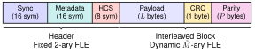
Header. The header is always transmitted using binary FLE at the reference symbol period ms/symbol, which is the base symbol duration of (5.1) at , ensuring reliable reception even under degraded conditions. The header comprises 40 bits organized as follows:
Synchronization word (16 bits, pattern
0xACFB): a fixed marker that allows the receiver to detect the start of a frame and recover the transmitter’s virtual symbol clock. The receiver correlates against the true synchronization word with a Hamming-distance tolerance of one bit.Metadata (16 bits): encodes the modulation index in bits [15:12], the payload length in bytes in bits [11:4], and the FEC profile in bits [3:0].
Header check sequence (8 bits): CRC-8/CCITT (polynomial
0x07, initial value0x00) computed over the two metadata bytes, allowing the receiver to validate the header before committing to payload demodulation.
Because the receiver must successfully extract the MCS and payload length to configure the payload demodulator, the header cannot utilize dynamic coding. The fixed binary modulation at the slowest symbol rate provides the maximum number of CFO samples per bit and the widest possible tone separation, which is what makes the header robust without any coding at all.
Interleaved Payload. Upon successful header reception, the transmitter transitions to the MCS specified in the metadata field. The payload, a CRC-8 integrity check, and Reed–Solomon parity bytes are combined into the two-dimensional interleaved codeword matrix introduced in Section 4.3.1 and transmitted in column-major order.
Codeword Matrix Geometry. The payload is organized as a matrix where each row constitutes an independent RS codeword over GF. The matrix dimensions are determined by the payload length and the FEC profile as follows. The matrix depth (number of rows) is:
The data section consists of payload bytes followed by a 1-byte CRC-8, for a total of data bytes. These are distributed row-by-row into the matrix with padding if needed, where the data bytes per row are:
Each row is independently RS-encoded, appending parity bytes to yield a total row length of . The total number of bytes transmitted on the air is:
As described in Section 4.3.1, the matrix is read out column-major: consecutive transmitted bytes correspond to consecutive rows within the same column, scattering burst erasures across independent codewords. Per (4.11), the worst-case correctable burst length is . For a 50-byte payload with FEC profile 3 (), the matrix has rows, yielding a burst tolerance of 96 contiguous erased bytes—far exceeding the typical gap lengths observed in practice.
The total number of payload symbols is:
and the complete frame duration is:
where ms is the header symbol period and is the payload symbol period for rate multiplier .
5.2.3 Transmitter
The UnderTone transmitter is outlined in Figure 5.2a. It consists of a traffic estimator, the coding, mapping, and pulse shaping, and then the register writes to the RFPLL sigma-delta modulator, which tunes all outgoing traffic from the device.
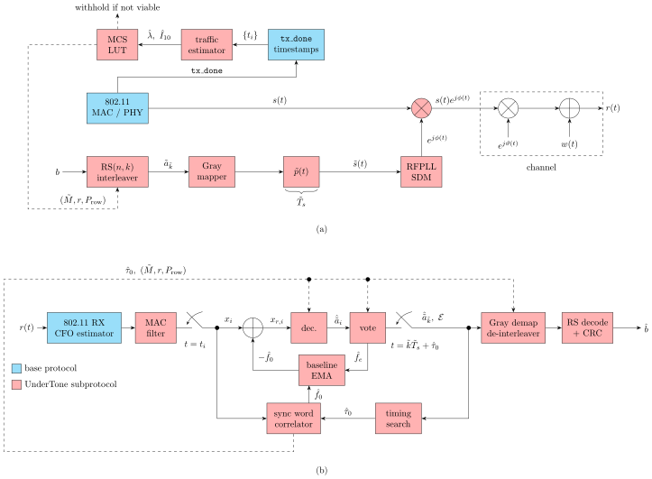
MCS Selection
The instrument available to the transmitter is the timestamp of every tx_done callback, from which it estimates the mean traffic rate and dispersion of (4.6), as described in Section 4.2.5. Both quantities are properties of the traffic generated by the transmitter itself.
The estimation noise in (4.5), however, is not among these observables. It is a receive-side quantity determined by the signal-to-noise ratio at the receiving device, which may be across the room, operating on another network, or—in the fully passive topology—unknown to the transmitter entirely. We therefore leave selection of the modulation index to higher-level applications, which can dynamically estimate the receiver’s noise floor through ACKs or another form of handshaking.a
We attempted a closed-form mapping from but never found one, owing to the many confounding factors that are part of the channel and receive chain. The channel couples an arrival process that is not renewal, an erasure pattern with structure at several timescales, a wandering baseline, and a block code whose failure depends on the distribution of erasures across rows rather than on their total count. We therefore obtained the mapping by exhaustive simulation.
The simulator runs the complete receive pipeline described next in Section 5.2.4—including acquisition, baseline tracking, timing refinement, voting, de-interleaving, and Reed–Solomon decoding—against synthetic arrival processes, with the channel impairments calibrated to the hardware: estimation noise at the measured standard deviation, thermal drift, and random wander at the correlation time of (4.5). Each configuration either recovers the payload or fails to, and the result is a goodput in bits per second.
The arrival processes are constructed to tile the plane rather than to reproduce named traffic scenarios. For each cell of a grid, a process is built whose measured rate and dispersion fall in that cell. Tiling is possible only because is rate-invariant; under a wall-clock dispersion the two axes would be dependent and the grid would not be well defined. The processes are drawn from four families: Poisson, heavy-tailed, on/off burst, and jittered-periodic, the last parameterized by a jitter that is a fraction of the nominal period. The jittered-periodic family alone reaches the sub-unity half of the plane.
The completed sweep covers 27,985 channels, and its structure follows from the near-independence of the two coordinates: symbol time is a decision about rate, and FEC is a decision about shape. Across the sweep’s optimal configurations, correlates strongly with the chosen symbol time and negligibly with the chosen FEC profile, while the dispersion behaves in the opposite way.
Figure 5.3 presents the completed sweep over the same plane and axes as Figure 4.5, with the six captured scenarios and two engineered carriers occupying the same positions. At each point, we brute-force every MCS value and select the one that consistently achieves the highest goodput over hundreds of randomly generated frames. Reading left to right along any horizontal line, the symbol time steps through its four values. The resulting bands are broad, contiguous, and nearly perpendicular to one another, making the separation between the two sub-decisions clearly visible.
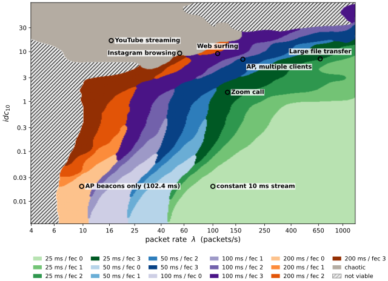
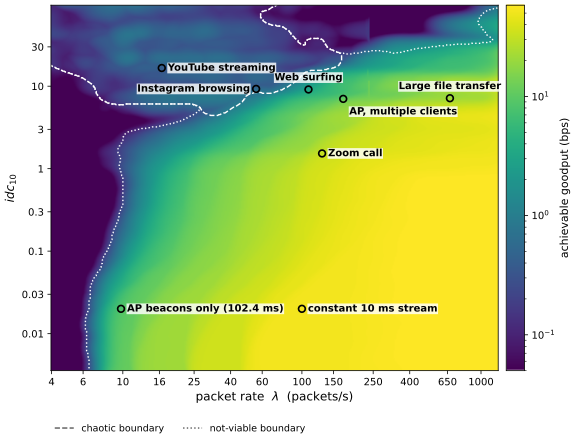
Figure 5.4 gives the delivered goodput rather than the configuration. Goodput rises with rate and falls with dispersion, spanning roughly two and a half orders of magnitude across the region where the link closes. The two engineered carriers sit deep in the bright region, since a periodic source wastes nothing on dispersion.
A region lies between the part of the plane where a configuration can be recommended with confidence and the part where the link does not close at all. It is shaded in Figure 5.3 and bounded by the dashed contour in Figure 5.4.
This region corresponds to bursty channels where the packet rate is sufficiently low and the clustering is high enough that the fastest MCS configurations (namely 25 ms/FEC 1) are the optimal choice, despite a significant probability of packet failure. One can think of this regime as “send it fast and hope”: the transmitter sends the packet as quickly as possible and relies on the burst lasting long enough to accommodate the entire UnderTone packet. It is distinct from the nonviable region, where packet failure is overwhelmingly likely. In the chaotic region, substantial data can still be delivered successfully, so we leave the handling of retries and packet acknowledgments to the user and higher-layer applications.
The transmitter carries the results of the sweep in a table over . Each cell holds a symbol time, an FEC profile, and a viability class, and the whole structure occupies 192 bytes.
5.2.4 Receiver
Where the transmitter places symbols onto an unpredictable stream of transmission opportunities, the receiver must recover those symbols from irregularly sampled observations of the carrier frequency. Each Wi-Fi packet from the transmitter provides one CFO measurement, recorded at the wall-clock time at which the MAC layer emits the packet. Letting denote the -th measurement—the measured offset of (4.5) at time —the receiver therefore observes a set of samples , whose sampling times are irregular and whose values are affected by oscillator drift.
The pipeline for recovering a frame from these samples is shown in Figure 5.2b. It follows the structure of a conventional receive chain—acquisition, carrier recovery, timing recovery, symbol decisions, and decoding—but adapts each stage to the irregularly sampled nature of the UnderTone signal.
Acquisition and Clock Recovery
The receiver monitors incoming frames in promiscuous mode, retaining only the readings from frames bearing the transmitter’s address and discarding the rest of the channel’s traffic. While hunting, it has no knowledge of where a packet begins. Detection relies on the header synchronization word of Section 5.2.2: the receiver maintains a running estimate of the two binary frequency levels, classifies each reading against them, and correlates the resulting bit stream against the known marker, declaring a candidate frame when the Hamming distance falls within tolerance.
The synchronization word also provides the timing reference. The receiver knows the symbol period , because it is fixed by the MCS, but it does not know where the transmitter placed the slot boundaries. In a conventional receiver a timing-error detector would close a loop around that question, driving the sampling instant toward the symbol centers. Here that is not available: the sampling instants are not ours to move. The receiver cannot decide when to sample; it can only decide how to partition a set of samples it was given.
So, it exploits the fact that the synchronization word is known. It slides a candidate grid origin across a full symbol period and selects the alignment that maximizes agreement between the buffered readings and the known synchronization pattern. Anchoring the clock to a known sequence rather than to noisy data transitions yields a one-shot phase estimate and a timestamp for the start of the packet, from which the header’s metadata—and with it , , and —configure the rest of the chain.
Carrier Recovery
The dominant source of symbol error is not additive noise in the individual readings—at viable Wi-Fi links, the estimation noise is comfortably smaller than the inter-tone spacing of (5.3), even for the densest constellation—but drift in the constellation’s center. Baseline drift over the course of a frame can shift the apparent tone locations enough to corrupt an otherwise usable payload.
Because UnderTone operates at a much lower sampling rate than a conventional wireless receiver, the receiver can retain the full set of samples for offline processing rather than relying on a causal tracking loop. We therefore track the baseline using a two-sided, decision-directed exponential moving average (EMA). Each reading is provisionally assigned to its nearest tone; subtracting that tone’s nominal offset leaves a residual that estimates the baseline error independently of the transmitted symbol. Writing for the baseline estimate and for the residual driving the filter, the update is
where indexes the readings in symbol slot and is the nominal offset of the tone selected for that slot. The detector then operates on the baseline-corrected readings .
The filter runs in both the forward and backward directions, and the two trajectories are averaged to reduce convergence error at the frame boundaries. Both passes are warm-started from the carried baseline estimate. Without this initialization, the backward pass would begin cold at the right edge of each processing block, placing its largest tracking error precisely where the forward pass is already most reliable.
This two-sided filter consistently outperforms a single-sided EMA and first- or second-order PLLs in our experiments. The advantage is fundamentally due to the non-causal processing: rather than predicting the future from past observations alone, each estimate can incorporate observations from both sides of the frame.
The initial value of an exponential moving average is ordinarily of little consequence, but this filter is decision-directed: a seed on the wrong side of a decision boundary produces wrong decisions, which drive the estimate further in the wrong direction. The receiver therefore seeds the tracker from the header, data-aided. Once the header check sequence passes, all forty header bits are known, so every header reading can be paired with the tone that was sent, and the mean of over the header measures the baseline directly. The estimate is unambiguous, since the binary header’s tones are 30 kHz apart, and accurate to a mean error of Hz.
Timing Recovery
The known-synchronization phase lock aligns the grid at the frame’s start, but a small residual offset can still misassign readings that fall near a slot boundary. The receiver refines the grid origin by a short self-consistency search: it scores a candidate alignment by the fraction of readings whose individual tone decision agrees with the majority decision of the slot they land in, then nudges in the direction that raises this agreement, accepting a shift only when it does. Because of the non-causal nature of the buffered frame, this timing refinement can occur along the entire payload before symbol decisions are made, providing the most accurate estimate to even the earliest symbols in the packet.
Symbol Decisions
Each reading is classified to its nearest tone, producing the per-reading decision . The receiver then decides each symbol slot by majority vote over the confident decisions within that slot, producing the per-slot decision .
Majority voting is used in place of averaging because residual timing errors and occasional erroneous CFO readingsb make the mean a fragile estimate of the transmitted tone. A reading that bleeds into an adjacent slot near a boundary is outvoted, whereas averaging allows the same reading to pull the slot estimate toward a neighboring tone and potentially across a decision boundary. Ties are resolved in favor of the tone associated with the reading nearest the slot center.
A slot containing no readings is not guessed. Instead, it is flagged as an erasure, and the set of such slots is passed to the decoder. This preserves the positional information that the erasure-optimal code is specifically designed to exploit.
Decoding
The decided symbols are repacked into bytes and de-interleaved by reversing the column-major readout of Section 4.3.1, restoring the independent Reed–Solomon codewords. Each row is then decoded using its corresponding parity budget, correcting the mixture of random errors and positional erasures according to the bound in (4.10). Finally, a CRC over the recovered payload confirms the frame. This final check is necessary because sufficiently many errors or erasures can cause the decoder to produce an entirely incorrect codeword that nevertheless satisfies the Reed–Solomon constraints. A passing CRC therefore provides end-to-end confirmation that the symbol decisions, de-interleaving, and error correction were all consistent with the transmitted payload.
5.2.5 Operational Modes
The decoupling between the FLE modulator and the primary Wi-Fi stack has a powerful consequence: UnderTone can ride on top of any underlying Wi-Fi traffic, regardless of who generated it or where it is going. The modulator writes the RFPLL SDM register on its own wall-clock schedule; it neither knows nor cares what data the MAC layer is transmitting. Symmetrically, the ESP32 allows promiscuous-mode monitoring to run concurrently with normal Wi-Fi association, so the receiver can extract per-frame CFO estimates from traffic that is not addressed to it. The receiver filters frames by the transmitter’s preconfigured MAC address, discarding all other traffic on the channel. These two properties—transmit-side independence from traffic content and receive-side independence from network membership—give rise to three transmitter modes, three receiver modes, and a rich set of deployment topologies.
Transmitter modes. Because the modulator is decoupled from the traffic source, the transmitter can operate in any Wi-Fi role.
Station mode. The transmitter associates to an existing access point and appears as a normal Wi-Fi client. The device behaves identically to any other station on the network, and the FLE modulation is invisible.
Access point mode. The transmitter runs its own SoftAP, giving it direct control over the operating channel. This mode is useful as APs tend to generate more outgoing traffic, and a minimum packet rate can be guaranteed with the AP’s beacons.
Unassociated mode. This is a very special use case, requiring a specific application. The device injects raw 802.11 data frames and modulates UnderTone on top of them. Because the device has no network association, there is no organic Wi-Fi traffic to carry FLE. These generated frames appear as spurious traffic to any network analyzer monitoring the channel.c
Receiver modes. The ability to run promiscuous monitoring concurrently with normal association means the receiver can occupy any role on the network without sacrificing UnderTone reception. This gives us the same modes as the transmitter. It is important to note that the UnderTone receiver must listen on the same channel as the UnderTone transmitter.
Station mode. The receiver associates to an access point on the same channel as the transmitter. It participates normally in the network while the promiscuous callback independently extracts the FLE stream from overheard frames from any device in range.
Access point mode. The receiver runs a SoftAP to which the transmitter associates as a station. The advantage of such a receiver is its ability to control the operating channel.
Unassociated mode. The receiver listens on the operating channel with promiscuous monitoring enabled but never associates or transmits. It is entirely invisible to the network: no probe requests, no association frames, no traffic of any kind leaves the device. This is the most operationally covert configuration.
Deployment topologies. The UnderTone data need not be destined for the same device receiving the primary Wi-Fi frames—the UnderTone receiver only needs to be within radio range and tuned to the correct channel. The combination of transmitter and receiver modes enables several distinct topologies:
Same recipient. The UnderTone receiver is also the destination of the primary Wi-Fi traffic—for example, a transmitter in station mode sending to a receiver in AP mode. The UnderTone payload and the primary payload travel to the same device.
Different recipient, same network. The transmitter sends primary traffic to one device on the network (e.g., an internet gateway), while the UnderTone receiver is a separate device associated to the same access point. Because all devices on the channel overhear all frames, the receiver extracts the FLE stream from traffic that is not addressed to it.
Different recipient, different network. As demonstrated in Figure 5.5, the transmitter is associated to one network, and the UnderTone receiver operates on a different network. As long as both devices share the same RF channel, the receiver captures the transmitter’s frames regardless of network membership. This works because 802.11 frames are broadcast at the physical layer; network association is a MAC-layer abstraction that does not affect RF reception. The key caveat is that both transmitter and receiver must be tuned to the same channel—a parameter a station does not control.
Fully passive. The transmitter operates as a normal station or AP on any network; the receiver is unassociated and invisible. The transmitter need not know the receiver exists. This is the most covert topology: UnderTone operates as a one-way broadcast with zero network footprint on the receive side.
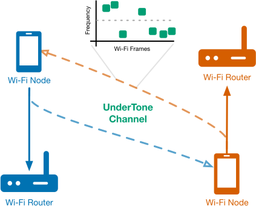
5.3 UnderTone Evaluation
Our evaluation of UnderTone considers four properties that characterize its suitability for deployment and subsequent applications:
Primary-link coexistence: How does UnderTone affect the performance of the primary Wi-Fi link? UnderTone is designed to operate within the existing 802.11 signal envelope; therefore, its transmissions should not introduce a significant increase in Wi-Fi packet error rate (PER) relative to a baseline without UnderTone traffic.
Long-term reliability: How does UnderTone behave during extended unattended operation? We evaluate whether synchronization, timing, or frequency estimates drift over time and whether the resulting error rate increases with runtime.
Channel coverage: How does UnderTone perform across the range of traffic conditions encountered by the underlying Wi-Fi link? We evaluate whether the measured UnderTone data rates agree with simulation and whether the system maintains the expected throughput as the primary link’s traffic load and channel conditions vary.
Noise tolerance: How does UnderTone performance degrade as the noise level increases for different modulation indices? From (4.4), the noise of the frequency-offset estimate is expected to follow the same trends as the primary link’s noise. We therefore evaluate whether the measured UnderTone error performance exhibits the same relationship between modulation index, noise, and BER as a primary link would.
5.3.1 Impact on the Primary Protocol
The backward-compatibility claim of Chapter 1 is the first consideration for an operator: UnderTone is only useful if the primary traffic carrying it remains unaffected. We therefore compare primary packet reception with the UnderTone modulator active against the same link with the modulator idle, using 200,000 packets in each condition. We reject the hypothesis that UnderTone degrades primary packet reception at a confidence level of 99.99992%.
This result is expected. A 30 kHz frequency excursion is well within the correction range of the automatic frequency control (AFC) loop used to compensate for oscillator mismatch. The exact pull-in range of the ESP32-C5’s frequency-correction loop is not publicly specified. However, measurements and implementations of 2.4 GHz Wi-Fi modems commonly place the pull-in range above 100 kHz [44]. UnderTone’s frequency excursion therefore remains well within the range over which the primary protocol is designed to tolerate and correct frequency offsets.
5.3.2 Sustained Operation
A subprotocol that works for a minute and drifts over an hour is not deployable. We ran each modulation and coding scheme continuously for a total of 48 hours under ideal carrier traffic, accumulating thousands of frames per configuration. Packet reception showed no trend over the campaign: the frame error rate at the end of a run is the frame error rate at its start, for every configuration in the table.
Nothing in the receiver accumulates. The baseline tracker, the timing grid, and the swing estimate are all re-derived per frame, so there is no state to drift, and the campaign confirms that the per-frame architecture of Section 5.2.4 behaves as designed over timescales far longer than a frame.
5.3.3 Channel Selection and Delivered Goodput
We now turn to the central question that distinguishes UnderTone from a conventional fixed-rate subprotocol: can UnderTone observe the conditions of the underlying Wi-Fi link and dynamically select the MCS that maximizes delivered goodput? Using the brute-force procedure described in Section 5.2.3, we first determine the optimal goodput for each observed traffic condition.
We evaluate this capability with the primary link held at a strong signal level, isolating traffic load from variations in received signal strength. The transmitter is an ESP32-C5 operating as a SoftAP while simultaneously generating primary-link traffic under 25 distinct configurations, selected on an approximately uniform grid over the feasible range of traffic conditions. Figure 5.6 shows the traffic conditions actually observed from the transmitter’s link-layer observables. The measured points do not fall perfectly on the target grid, particularly at higher traffic rates. This deviation results from MAC contention and the resulting stochasticity in packet service times, which produces some unintentional clustering of observations. Such variation is inherent to a real shared wireless channel rather than an artifact of the experimental setup, and we therefore treat the observed operating points as representative of the conditions UnderTone would encounter in deployment.
The receiver is a station associated with the SoftAP. This configuration allows us to control the primary traffic exchanged between the two devices and isolate the effect of traffic load on UnderTone’s channel selection, although the same selection procedure is applicable to other Wi-Fi traffic configurations.
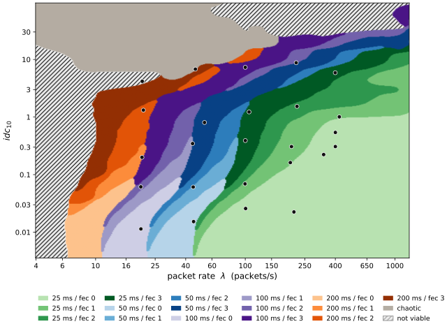
The measured goodput closely agrees with the simulated goodput across all 25 operating points, with 100 frames collected at each point. The median deviation from the expected goodput values from simulation is only 0.3%. This agreement demonstrates both the accuracy of the MCS selection table and the fidelity of the channel model used to generate it.
5.3.4 Noise Tolerance and Modulation Order
We evaluate noise tolerance on a bench consisting of a USRP X410, which injects calibrated Gaussian noise into the cabled signal path and measures Wi-Fi signal strength, and an UnderTone transmitter and receiver, one on each of two ESP32-C5s, all connected through a mesh attenuator. The received signal power is held at dBm while the noise power is swept to vary the SNR without changing the receiver gain. For each SNR, we measure the BER for each modulation order using uncoded transmissions with a 25 ms symbol period.
Figure 5.7 shows the resulting BER as a function of the overall received signal-to-noise power ratio, measured directly by the USRP X410 across the transmitted signal bandwidth. This SNR is proportional to the SNR of the CFO estimation by (4.4). As expected, higher modulation orders require higher SNR because the frequency spacing between adjacent tones decreases as increases, reducing the separation between decision regions. The curve begins to degrade at approximately 10–12 dB SNR, while does not show significant degradation until approximately 18–20 dB. The lower modulation orders are substantially more tolerant to noise.
Notably, no visible curve appears in the measured SNR range. This is not an omission: the two decision regions are separated by a sufficiently large frequency margin that the measured frequency-estimation error does not approach the decision boundary. Consequently, the BER remains effectively zero even as the SNR is reduced to the point where the underlying 802.11 link can no longer reliably operate. Thus, for , the primary Wi-Fi link reaches its noise-limited operating limit before the subprotocol’s detector reaches its own error floor.
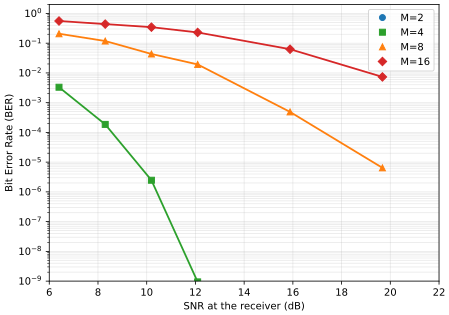
5.4 SpectralSeal
The measurements of Section 5.3 settle the two use cases of Section 5.1 that the channel supplies on its own. UnderTone delivers a small broadcast stream on traffic a device was already sending, across network boundaries, and down to within a few decibels of the primary link’s own sensitivity limit; and it does so without adding a frame, altering a header, or leaving anything behind for a conventional analyzer to count. The third use case is not satisfied by a channel alone. Authentication requires not merely a message but a message an adversary cannot manufacture, and no property of a carrier makes a value unforgeable, so the guarantee has to be constructed on top of the channel rather than inherited from it. We build that construction here, and apply it to rogue access point detection.
Rogue access point detection remains an open problem at the physical layer. Protocol-level defenses such as WPA3-SAE and Protected Management Frames [17] authenticate the session, but not the transmitter. An attacker that clones the SSID and pre-shared key can therefore appear indistinguishable from the legitimate AP to a device that has not yet completed a handshake; WPA3 transition-mode downgrades can reintroduce this vulnerability even after association [18]. Passive RF fingerprinting provides a hardware-level alternative, but its performance can degrade with changing environmental conditions, receiver hardware, and device aging [21].
SpectralSeal takes a different approach: the legitimate access point continuously embeds a time-varying cryptographic commitment into the carrier frequency of every transmitted frame using FLE. A receiver with knowledge of the public anchor can verify each commitment in real time, while a rogue AP without the corresponding secret cannot reproduce the sequence. The watermark is invisible to standard Wi-Fi receivers and, like UnderTone, requires no modification to the IEEE 802.11 standard. SpectralSeal requires FLE transmission only at the access point; stations need only support FLE reception.
Throughout this work, we implement and evaluate SpectralSeal using ESP32-C5 devices, with the understanding that the protocol can be deployed on other commodity Wi-Fi hardware given sufficient reverse engineering or native firmware support. SpectralSeal requires no hardware modifications; all required functionality is implemented in firmware.
5.4.1 System Architecture
SpectralSeal comprises three components:
Authenticating transmitter. The access point generates a fresh chain per epoch, publishes the anchor, and modulates beacons onto its normal Wi-Fi traffic via FLE. It requires internet connectivity for anchor publication and time synchronization, and knowledge of its own coordinates.
Verifying receiver. Retrieves the anchor, synchronizes its clock, and passively monitors the channel. It never associates with the AP, operating in the fully passive UnderTone topology (Section 5.2.5)—the envisioned model for a mobile device checking an access point before associating.
Anchor distribution service. A store mapping AP identifiers to their current anchor. Its trust model is deployment-dependent and orthogonal to the physical-layer design.
The key operational advantage over protocol-level authentication is that SpectralSeal authenticates the AP before the first management frame exchange. A device approaching a new wireless network can verify the AP’s physical-layer watermark while still in the unassociated, passive monitoring state.
5.4.2 Hash-Chain Construction
The authentication mechanism is built on a one-way hash chain whose construction borrows the commitment-then-reveal ordering of the TESLA broadcast authentication protocol [45]. Because the FLE channel is broadcast-only and carries no higher-layer data requiring MAC authentication, each chain value is itself the authentication token rather than a key for a message authentication code. This simplification eliminates the key-disclosure delay required by TESLA while preserving its core security property: an adversary who observes the current broadcast cannot compute future values without inverting the hash function.
At the beginning of each epoch (one calendar day), an access point generates the chain as follows. Let denote SHA-256 truncated to 64 bits and let denote the number of authentication intervals per epoch. The AP selects a uniformly random secret and computes:
The terminal value is designated the anchor and is published to an anchor distribution service accessible to all receivers. The 64-bit truncation provides preimage resistance, which is sufficient for a chain that is discarded and regenerated daily.
The chain is revealed in reverse chronological order. The epoch is divided into fixed-duration time slots of length , and the slot index determines which chain value is disclosed:
Reverse ordering ensures that each disclosed value is older in the chain than all previously disclosed values. An adversary who observes cannot compute the next slot’s without inverting , which is computationally infeasible.
A receiver that knows the anchor verifies a recovered value received in slot by hashing it forward the expected number of steps:
If the check succeeds the value is authentic: only an entity that knows the secret could have produced a value at the correct chain depth. Once verified, can itself serve as the verification target for subsequent beacons, reducing the per-beacon hash cost from to under sequential reception. At a beacon interval of s, a full day contains slots, and even the cold-start worst case of hash evaluations completes in well under one second on commodity hardware with hardware-accelerated SHA-256.
This is the base protocol, and it is complete as an authentication mechanism: it establishes that a transmitter holds a secret committed to before the epoch began. Section 5.4.4 develops an optional extension that additionally binds the chain to a physical place.
5.4.3 Beacon Format
SpectralSeal uses a simplified, fixed-MCS variant (, ms) of the UnderTone packet architecture described in Section 5.2.2. Because the beacon carries a single 64-bit hash value at a known, fixed modulation, the header is unnecessary—both sender and receiver agree on the modulation parameters a priori as constants of the SpectralSeal protocol. This eliminates the 8-second header overhead of general-purpose UnderTone packets, reducing the authentication interval from tens of seconds to 2.5 seconds. We thus adapt an UnderTone packet to a SpectralSeal packet as shown in Figure 5.8 and described below.
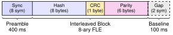
Synchronization preamble. An 8-symbol synchronization word in which each of the 8 tones appears exactly once. This permutation-based preamble serves three purposes: it delimits the beacon start, it calibrates the receiver’s tone-spacing estimate (since all tones are observed in a known order), and its combinatorial uniqueness provides robust detection under a Hamming-distance tolerance of one symbol. The preamble occupies ms.
Payload. The 64-bit hash value and a CRC-8 integrity check (9 bytes total) are protected by the same column-major Reed–Solomon interleaving used in UnderTone (Section 5.2.2). The fixed geometry— codeword rows, data bytes and parity bytes per row—yields 15 bytes on the air, mapped to 40 symbols at bits per symbol. This RS configuration corrects up to one byte error per row or up to two erasures per row, with a burst tolerance of contiguous erased bytes across the interleaved matrix. The payload occupies ms.
Baseline gap. A ms return to the unmodulated carrier baseline between consecutive beacons. This gap is designed so that the receiver can calibrate against the AP’s unmodulated baseline CFO. It is also deliberately used for relay detection and baseline CFO estimation, discussed in Section 5.4.5. Its duration is chosen such that the processing latency of a capture-and-retransmit relay is detectable as a timing anomaly in the gap onset.
The complete beacon therefore spans symbols at 50 ms each, yielding ms per authentication interval.
5.4.4 Location Binding
The protocol described so far authenticates a secret. An optional extension additionally binds it to a place, at no cost to the beacon format and none to the verification schedule.
Let denote the access point’s latitude and longitude, quantized to four decimal places (11 m precision). Write the location-keyed hash step as
and substitute for throughout the chain construction (5.10) and the verification (5.12). Nothing else changes: the chain has the same length, the anchor is the same size, and the beacon carries the same 64 bits. The location is never transmitted.
Because is now folded into every hash step, the chain is keyed with the location. Verification reproduces the anchor only when the location supplied to the forward hash matches the one used at generation. This turns the receiver into a cryptographic co-location tester: rather than trusting a location claim published in the anchor metadata, the receiver substitutes its own independently measured position , from GNSS or cellular positioning, into (5.12). The chain verifies if and only if the receiver stands, to within the quantization tolerance, where the chain was generated. A relay retransmitting cryptographically valid beacons from a distant location fails this test automatically, since the far-away receiver hashes forward with the wrong location and never reaches the anchor.
A naive exact match on the quantized location is brittle. Consumer GNSS error (3–5 m under open sky, often 10–30 m indoors or amid multipath) is comparable to the 11 m quantization cell, so two honest devices frequently land in adjacent cells, and a device near a boundary may quantize to either side. Coarsening the grid to reduce false rejections would only enlarge the region a relay can occupy undetected. The fine grid is therefore retained and the receiver instead searches a small neighborhood around its own reading:
where is the quantization step and offsets the candidate cell in latitude and longitude. The receiver accepts if any of the neighboring cells reproduces the anchor. This costs nine forward-hash attempts at cold start—negligible—and thereafter zero: once a cell is confirmed it is cached, and subsequent beacons verify with a single step against that locked cell (Section 5.4.2). The search widens the acceptance region to three cells, roughly 33 m across in each axis and therefore up to m of disagreement, comfortably exceeding typical GPS error while eliminating the boundary-straddle discontinuity that no single quantization can avoid. A search (55 m across, up to m) is available for receivers operating under degraded positioning.
The acceptance radius is therefore a deliberate security–usability trade rather than an accident of precision. It cannot be shrunk to the point of excluding all relays, because a relay to a nearby location—an adjacent room or the floor above—may fall within any tolerance loose enough to admit honest receivers. This residual slack is exactly what the timing defense of Section 5.4.5 is designed to close: location binding confines a successful relay to the receiver’s immediate vicinity, and at that proximity the inter-beacon gap timing detects the relay’s processing latency. The two mechanisms are complementary.
5.4.5 Adversarial Model and Mitigations
We consider an adversary whose goal is to operate a rogue access point that passes SpectralSeal verification at a receiver’s location. We consider adversaries with increasing levels of sophistication and access. In the strongest case, the adversary has full knowledge of the SpectralSeal protocol, can receive and decode FLE transmissions, has access to the published anchor, and can transmit FLE-modulated signals using hardware of its choosing. We do not assume that the adversary can invert SHA-256, compromise the AP’s secret , or obtain physical access to the legitimate AP’s hardware. Even under this strong adversary model, SpectralSeal prevents the adversary from establishing a verifiable rogue AP.
We impose one additional constraint that follows from the adversary’s objective: a usable rogue AP cannot share the legitimate AP’s BSSID while both remain operational. The BSSID is the addressing and state key of the basic service set. A station uses it to index association state, sequence-number spaces, duplicate detection, block-ack reordering, CCMP packet numbers, and timing synchronization, all of which assume a single peer. Two independently operating radios sharing a BSSID therefore do not form two interchangeable APs; their frames instead interleave state from independent sequence counters, packet-number spaces, and timing sources, causing replay protection, frame reordering, and power-save operation to fail. The attacker has not cloned the legitimate AP’s service—it has disrupted both APs, including its own. Our threat model concerns an evil twin attempting to provide a functioning impersonation of the legitimate network, not a denial-of-service attack.
A usable evil twin must therefore use a distinct BSSID unless the adversary first disables the legitimate AP through jamming or deauthentication flooding. Such attacks are outside our threat model and, in the latter case, are already addressed by Protected Management Frames. Moreover, a BSSID collision does not provide a path to false acceptance: because the receiver demultiplexes carrier-frequency observations by transmitter address, frames from two radios sharing one BSSID would interleave their offset samples into a single symbol stream, corrupting the FLE decode and producing no verdict rather than a false acceptance. Thus, all attacks considered below originate from a BSSID that the receiver can distinguish from that of the legitimate AP.
The following enumerates common tactics that an adversary might attempt to overcome SpectralSeal and how the protocol prohibits such attack vectors.
Tactic 1: Impersonation. The attacker clones the legitimate AP’s SSID. Without , the attacker cannot compute any chain value earlier in the chain than the most recently disclosed one, because doing so requires inverting . Fabricated values fail the forward-hash verification (5.12) deterministically. This threat is mitigated inherently by the one-way security of the hash function.
Tactic 2: Replay attack. The attacker records legitimate SpectralSeal beacons and replays them at a later time. Because each chain value is bound to a specific time slot via the broadcast schedule (5.11), a value from slot replayed at slot does not verify: the forward-hash count does not produce the anchor. Both AP and receiver synchronize to a common time reference (NTP or GNSS); the receiver rejects any value whose slot index does not match the current wall-clock interval.
Tactic 3: Relay / wormhole attack. This is the most sophisticated threat. The attacker places a receiver near the legitimate AP, captures each beacon in real time, and retransmits it from a rogue AP at a different location. The relayed values are cryptographically valid because they originate from the legitimate chain; neither the impersonation nor the replay defense applies, since the attacker forges nothing and preserves slot timing. SpectralSeal attacks the wormhole from two independent directions—space and time—and the defense rests on the interaction between them rather than on either alone.
Location binding (spatial). Because is keyed into every hash step (5.13), a receiver verifies by forward-hashing against its own measured position (5.14). A relay retransmitting from a distant rogue AP fails deterministically: the victim receiver’s location does not match the one the chain was generated with, and the forward hash never reaches the anchor. The neighborhood search (Section 5.4.4) admits honest GPS disagreement but confines any successful relay to within tens of meters of the legitimate coverage—the attacker cannot mount the wormhole from across the building, let alone across town.
Timing analysis via baseline gap (temporal). Within that confined region, a relay still introduces a measurable latency. If both the legitimate and rogue signals are receivable, the rogue’s beacon symbol transitions are measurably delayed relative to the legitimate AP’s.
The two defenses cover each other’s blind spots. An adversary must simultaneously be close enough to the legitimate AP to share its location signature, yet far enough away that the victim cannot receive the legitimate AP’s signal to compare timing against. Such a scenario is improbable unless the adversary has physical access to the legitimate infrastructure, which we do not assume.
Tactic 4: Anchor forgery. The attacker publishes a fraudulent anchor for a rogue chain. Anchor authenticity is an application-layer concern—TLS, certificate pinning, or signed anchor records—orthogonal to the physical-layer protocol. SpectralSeal assumes a trusted anchor distribution channel; the strength of that assumption depends on the deployment context. Because the anchor is public and auditable, a legitimate AP operator can detect conflicting anchors for the same BSSID.
Tactic 5: Time manipulation. The attacker disrupts the receiver’s time synchronization to cause it to accept stale or future chain values. The receiver’s clock is disciplined by NTP or GNSS, both of which are independently verifiable. Gross time errors cause all beacons to fail verification—a detectable anomaly—rather than silently accepting rogue values. The protocol degrades safely: a receiver with uncertain time rejects all beacons rather than trusting any.
| Threat | Mitigation layer | Mechanism | Assumption |
|---|---|---|---|
| T1: Impersonation | Cryptographic | One-way hash chain | SHA-256 preimage resistance |
| T2: Replay | Temporal | Time-slot binding | Synchronized clocks |
| T3: Relay/wormhole | Spatial and temporal | Location-keyed chain gap timing | Receiver knows own position |
| T4: Anchor forgery | Application | Authenticated distribution | Trusted anchor channel |
| T5: Time manipulation | Temporal | Fail-safe rejection | NTP/GNSS integrity |
5.5 SpectralSeal Evaluation
We built a proof-of-concept implementation on COTS microcontroller hardware using the FLE-on-COTS substrate of Chapter 4. The transmitter operates in simultaneous access-point and station mode: the station interface provides internet connectivity for time synchronization and anchor publication, while the access-point interface generates the Wi-Fi traffic that carries the FLE watermark. The receiver fetches the anchor over a conventional network connection, then transitions to a fully passive, unassociated monitoring mode on the access point’s operating channel.
Throughout this section a beacon verifies when its 64-bit value is recovered without residual error and reproduces the published anchor under the forward hash of (5.12). The criterion is strict: a beacon whose Reed–Solomon decoding leaves any uncorrected byte fails, since the recovered value is then not a chain value and cannot verify.
5.5.1 Verification Rate
The most challenging environment for SpectralSeal is a congested one, where MAC contention and timing jitter are substantial. We ran the system continuously for 18 hours in a high-density residential environment, sharing a 5 GHz channel with 32 other BSSIDs without any attempt to protect the channel. Over this period, the access point transmitted 25,921 beacons, of which the receiver verified 99.6%. Figure 5.9 shows the verification rate over the run; the one-hour rolling average never falls below 99%.
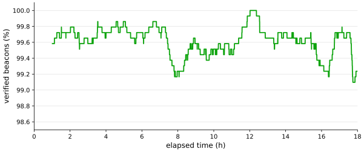
The missed SpectralSeal beacons do not constitute a security concern. A listening receiver needs to successfully verify only one beacon to begin trusting the AP. Over the 18-hour run, no two consecutive beacons failed verification; the longest failure run was a single beacon. This bounds worst-case acquisition latency to one repeat interval—5 seconds—compared with a mean interval of 2.5 seconds. Because a failed decode produces no verdict rather than an incorrect one, congestion affects acquisition latency but not security.
5.5.2 Adversarial Demonstrations
We built each adversary of Section 5.4.5 and ran it against the genuine receiver. Every attack implementation reuses the legitimate transmitter’s and receiver’s own source—the same tone geometry, the same Reed–Solomon codec, the same symbol clock—so that no attack fails on account of its implementation.
Impersonation. Our evil twin used the same SSID, transmitting fabricated 64-bit values in the correct beacon format at the correct times. The receiver decoded and rejected every one. The outcome is deterministic rather than probabilistic, since without the chain secret the forward hash of (5.12) reaches the anchor only by preimage search.
Replay. We recorded genuine beacons and retransmitted them in later slots. The values are authentic, so the cryptographic objection does not apply—but the forward-hash count is bound to the slot index, and a value from slot replayed at slot requires hash steps to reach the anchor when it needs . The receiver rejected every replayed beacon.
Relay and wormhole. We evaluated two attacks against the physical-layer defenses: a co-located analog relay and a spatially separated wormhole. Both forward genuine SpectralSeal beacons. The two experiments target different properties of the system: the co-located relay tests the temporal causality of FLE, while the wormhole tests the receiver-location constraint.
For the first experiment, we placed an analog relay alongside the legitimate AP and configured it to retransmit each observed symbol as quickly as possible. Because the relay necessarily observes a symbol before retransmitting it, every relayed symbol incurs positive processing and transmission latency. We measured latency at the symbol level, including cases in which the genuine and relayed transmissions occurred back-to-back. Even when the two signals were nearly adjacent in time, the receiver could consistently determine which transmission arrived first. The cryptographic defense alone would already reject this relay because its BSSID has no registered anchor; the timing experiment nevertheless demonstrates that even a capable causal relay cannot reproduce the temporal signature of the legitimate AP.
The relay experiment also required a strictly causal decoder, since the deployed receiver buffers an entire beacon before estimating its FLE symbols. A relay cannot do so: it must estimate and forward each symbol before observing the subsequent symbols. We therefore implemented a causal decoder for the relay. Interestingly, its synchronization performance illustrates why timing, rather than symbol correctness, is the appropriate defense. The relay’s causal decoder recovered 0 of 8 synchronization symbols in every beacon when evaluated against the known synchronization word. Nevertheless, the receiver successfully recovered the relayed stream, locking synchronization on 48 of 49 beacons. The relay’s decoding errors manifest primarily as a constant carrier-frequency offset, which the receiver’s baseline estimator removes. Thus, a relay need not decode FLE correctly, or even know its own frequency offset, to produce a recoverable stream. The timing measurement therefore identifies the adversary rather than relying on failure of the relay’s decoder.
For the second experiment, we implemented a wormhole using separate ingress and egress devices. The ingress captured genuine SpectralSeal beacons, transported them over a conventional network, and the egress retransmitted them from a physically different location. Unlike the co-located relay, this attack does not attempt to reproduce the legitimate transmission’s timing; instead, it tests whether a genuine commitment captured at one location can be made valid at another. The receiver’s location check rejected the replayed beacons, demonstrating that possession of a genuine commitment does not by itself authorize transmission from an arbitrary location.
The ESP32-C5 testbed does not provide an independent GPS measurement, so we supplied the transmitter and receiver coordinates as hard-coded values. These coordinates serve as a stand-in for the independently measured positions available in the intended deployment: the legitimate AP and the receiver would necessarily be at different physical locations when the two are not co-located. In the experiment, we therefore configured the receiver with a different coordinate from the transmitter, and the location check rejected the wormhole-replayed beacons. The experiment thus validates the relevant behavior of the spatial defense: a genuine SpectralSeal commitment captured at the legitimate AP cannot be replayed from a location inconsistent with the receiver’s configured position. In a deployment with independent positioning, the same check would operate on the receiver’s measured position rather than a hard-coded stand-in.
We did not implement anchor forgery or time manipulation. Neither attacks the physical-layer mechanism: the first targets the authenticity of the anchor distribution channel and the second the receiver’s clock discipline, and both have answers—authenticated transport, NTP and GNSS integrity—that are identical whatever carries the commitment beneath them. Both are recorded as assumptions in Table 5.3, and both fail in the safe direction. A fraudulent anchor makes the genuine access point fail to verify, and a disturbed clock makes every beacon fail its slot check, so an attack on the surrounding infrastructure costs availability rather than authenticity.
6 Conclusion
This thesis presents frequency lock encoding and develops it from a claim about wasted synchronization margin to a generalizable theory and a complete subprotocol with two working applications on unmodified consumer hardware. Chapter 2 derived the admissible frequency deviation and subprotocol rate in closed form from the base protocol’s loop bandwidth, and Chapter 3 measured where inside those bounds the primary and subprotocol can coexist, finding that within this envelope, the presence of the subprotocol has a negligible effect on the primary link. Chapter 4 put the system on the air, first on software-defined radios above 900 kbps and then on commodity IEEE 802.11ax silicon, answering the absence of baseband access and MAC control with two undocumented registers, a subprotocol symbol clock decoupled from the packet arrival process, and an erasure-first understanding of the channel that decoupling produces. Chapter 5 built two applications on that substrate and measured both: UnderTone, which allows Wi-Fi devices to communicate on top of existing traffic across network boundaries while injecting no additional traffic on the air, and SpectralSeal, which allows a device to distinguish legitimate access points from impostors without any modifications to existing hardware or established protocols.
We now return to the three claims made in Chapter 1: that FLE is protocol-agnostic, backward-compatible, and opportunistic. Each was a design goal at the outset, and each is now supported by analysis, simulation, and measurement. We take them in turn.
6.1 Protocol Agnosticism
FLE is protocol-agnostic because the theory is written for a mechanism rather than for a standard. Chapter 2 shows that a single inequality, (2.80), governs the admissible deviation whether the offset estimate comes from a decision-directed phase-locked loop running every base symbol, from pilot subcarriers embedded in a continuous OFDM transmission, or from a preamble correlation performed once per burst. Every wireless protocol produces one of these three observables, because a receiver that cannot estimate and correct carrier frequency offset cannot demodulate anything in the real world. Adapting the analysis to a new protocol is a matter of mapping that protocol’s characteristics to the generalized inequality, not a new derivation.
Our demonstrations show this is true. Chapter 3 develops FLE on single-carrier QPSK, where the observable is a loop filter output, and on 802.11 OFDM bursts, where it is a Schmidl–Cox estimate taken from the long training sequence. Chapter 4 then transmits both over the air, and afterward reproduces the entire system on commodity Wi-Fi silicon whose baseband is closed and whose MAC schedules its own transmissions. The same subprotocol runs on a laboratory instrument with complete IQ access and on a microcontroller with none, and we reproduced the transmitter again on the ESP32-S3, which is different silicon altogether.
6.2 Backward Compatibility
Backward compatibility is the claim that FLE can be introduced into a network that has never heard of it, and it is the claim this thesis tests most exhaustively. Chapter 3 places 23,520 observations under AWGN, EPA, and EVA channels and asks whether the primary link can tell the difference. It cannot. The channel model is the sole significant factor in primary performance. Introducing UnderTone to a typical consumer network showed no statistically significant difference in Wi-Fi packet reception, regardless of the presence of FLE modulation.
Our implementations of FLE required no additional spectrum, no additional antennas, and no modification to existing standards—802.11, in our case. UnderTone and SpectralSeal add no additional frames to the air; they modulate traffic the device was going to transmit regardless.
6.3 Opportunism
Opportunism is the claim that FLE spends only surplus, and Chapter 2 shows that the surplus is larger than one might expect. Section 2.2.4 establishes that the admissible frequency deviation, and therefore the capacity available to FLE, scales quadratically with loop bandwidth.
The measured envelope of (3.1) confirms that the usable region is broad rather than a knife edge, and the over-the-air results show the subprotocol borrowing the primary link’s budget rather than requiring one of its own. Chapter 4 finds the primary and secondary error rates tracking each other as the link budget changes, which is what (2.52) predicts. Chapter 5 quantifies how much headroom that leaves: at binary modulation of FLE over Wi-Fi, the subprotocol would require roughly dB of signal-to-noise ratio before its errors became measurable, about 12 dB below the point at which the 802.11 link stops delivering packets. The Wi-Fi packets fail before binary FLE does. Even at the densest constellation and with no coding at all, the subprotocol delivers at least 92.7% of frames across an 18 dB range of received signal.
Opportunism also means knowing when not to transmit, which is particularly important in framed protocols. FLE systems can do this automatically. Section 4.2.5 shows an FLE transmitter measuring the traffic it is already generating and choosing the optimal configuration to transmit on top of it. Where the carrier cannot support the subprotocol, the selector withholds it.
6.4 Future Work
The foundation is complete, and what remains is breadth. Two directions follow naturally, and both are now inexpensive.
The first is the family of devices. Any device that estimates carrier frequency is a candidate receiver, and any device that tunes its carrier is a candidate transmitter, which is nearly every radio in production. What a port requires is access to those two quantities, and that access can come from a vendor exposing them in firmware, from reverse engineering of the kind performed in Chapter 4, or from open drivers and measurement platforms that already surface physical-layer telemetry [43], [46]. The ESP32-S3 transmitter is the evidence that the approach carries to different silicon. The natural progression is toward native firmware support, at which point FLE becomes a software feature of hardware that has already shipped.
The second is the family of protocols. Bluetooth Low Energy and IEEE 802.15.4 estimate offset once per packet and fall under the burst case directly [47], [48]. Cellular downlinks estimate from reference signals at a known cadence and fall under the pilot-tracked case, where they are the easier target rather than the harder one, because a carrier that never stops removes the erasure that dominates the Wi-Fi channel and returns the full parity budget to noise impairments. Protocols built for high Doppler, vehicular mobility, or satellite geometry reserve the widest tracking loops because they must, and by (2.80) they therefore carry the most unused margin.
References
- [1] A. Palacios, C. Bledsoe, E. Kelsey, L. Landon, J. Backman, and P. Lundrigan, “Stealthy signals: Using ghost modulation to watermark interference,” in Proceedings of the 1st ACM workshop on LEO networking and communication, in LEO-NET ’23. New York, NY, USA: Association for Computing Machinery, 2023, pp. 13–18. doi: 10.1145/3614204.3616105.
- [2] P. Lundrigan, N. Patwari, and S. K. Kasera, “On-off noise power communication,” in The 25th annual international conference on mobile computing and networking, in MobiCom ’19. New York, NY, USA: Association for Computing Machinery, 2019. doi: 10.1145/3300061.3345436.
- [3] J. Johnson, A. Palacios, C. Arvonen, and P. Lundrigan, “Wireless latency shift keying,” in Proceedings of the 30th annual international conference on mobile computing and networking, in ACM MobiCom ’24. New York, NY, USA: Association for Computing Machinery, 2024, pp. 452–466. doi: 10.1145/3636534.3649373.
- [4] A. Palacios, “Exploring sub-protocols for spectrum cooperation and transparency,” PhD Dissertation, Brigham Young University, 2025. Available: https://scholarsarchive.byu.edu/etd/10902
- [6] FCC, “Unlicensed Use of the 6 GHz Band.” Apr. 2020. Accessed: Aug. 22, 2025. [Online]. Available: https://docs.fcc.gov/public/attachments/DOC-363490A1.pdf
- [7] M. Weldegebriel, Z. Li, D. Maas, G. Hellbourg, N. Zhang, and N. Patwari, “Sensing and Stopping Interfering Secondary Users: Validation of an Efficient Spectrum Sharing System.” arXiv, 2025. doi: 10.48550/ARXIV.2507.13554.
- [8] M. G. Weldegebriel, J. Wang, N. Zhang, and N. Patwari, “Pseudonymetry: Precise, private closed loop control for spectrum reuse with passive receivers,” in 2022 IEEE international conference on RFID (RFID), 2022, pp. 91–96. doi: 10.1109/RFID54732.2022.9795976.
- [9] A. Palacios et al., “Network Layer Spectral Coordination Integrated With Hadamard Projection for Multilayer Interference Mitigation,” in 2024 IEEE International Symposium on Dynamic Spectrum Access Networks (DySPAN), Washington, DC, USA: IEEE, May 2024, pp. 402–411. doi: 10.1109/DySPAN60163.2024.10632837.
- [11] A. Dutta, D. Saha, D. Grunwald, and D. Sicker, “Secret agent radio: Covert communication through dirty constellations,” in Information hiding, M. Kirchner and D. Ghosal, Eds., Berlin, Heidelberg: Springer Berlin Heidelberg, 2013, pp. 160–175.
- [12] X. Wei and D. Saha, “WISE: Waveform independent signal embedding for covert communication,” IEEE Transactions on Machine Learning in Communications and Networking, vol. 2, pp. 64–80, 2024, doi: 10.1109/TMLCN.2023.3343326.
- [13] D. Chew, C. Nguyen, S. Berhanu, C. Baumgart, and A. B. Cooper, “Covert communications through imperfect cancellation,” in Proceedings of the 2022 ACM workshop on information hiding and multimedia security, in IH&MMSec ’22. New York, NY, USA: Association for Computing Machinery, 2022, pp. 63–68. doi: 10.1145/3531536.3532959.
- [14] J. Classen, M. Schulz, and M. Hollick, “Practical covert channels for WiFi systems,” in 2015 IEEE Conference on Communications and Network Security (CNS), Florence, Italy: IEEE, Sep. 2015, pp. 209–217. doi: 10.1109/CNS.2015.7346830.
- [15] M. Vanhoef and E. Ronen, “Key reinstallation attacks: Forcing nonce reuse in WPA2,” in Proceedings of the 2017 ACM SIGSAC conference on computer and communications security (CCS), ACM, 2017, pp. 1313–1328. doi: 10.1145/3133956.3134027.
- [16] M. Agarwal, S. Biswas, and S. Nandi, “Advanced rogue access point detection techniques: A comprehensive survey,” Computer Science Review, vol. 49, p. 100570, 2023, doi: 10.1016/j.cosrev.2023.100570.
- [17] IEEE Standard for Information Technology—Amendment 4: Protected Management Frames. IEEE, 2009. doi: 10.1109/IEEESTD.2009.5278657.
- [18] M. Vanhoef and E. Ronen, “Dragonblood: Analyzing the dragonfly handshake of WPA3 and EAP-pwd,” in Proceedings of the 2020 IEEE symposium on security and privacy (SP), IEEE, 2020, pp. 517–533. doi: 10.1109/SP40000.2020.00031.
- [19] C. P. Kohlios and R. C. Walters, “A security analysis of WPA3 SAE: Remaining vulnerabilities and proposed mitigations,” in Proceedings of the 2023 international conference on cyber security and protection of digital services (cyber security), IEEE, 2023, pp. 1–8. doi: 10.1109/CyberSecurity57169.2023.10172783.
- [20] S. Nikbakhsh, A. B. A. Manaf, M. Zamani, and M. Janbeglou, “A novel approach for rogue access point detection on the client-side,” in Proceedings of the 26th international conference on advanced information networking and applications workshops (WAINA), IEEE, 2012, pp. 684–687. doi: 10.1109/WAINA.2012.208.
- [21] V. Brik, S. Banerjee, M. Gruteser, and S. Oh, “Wireless device identification with radiometric signatures,” in Proceedings of the 14th ACM international conference on mobile computing and networking (MobiCom), San Francisco, CA, USA: ACM, 2008, pp. 116–127. doi: 10.1145/1409944.1409959.
- [22] T. D. Vo-Huu, T. D. Vo-Huu, and G. Noubir, “Fingerprinting Wi-Fi devices using software defined radios,” in Proceedings of the 9th ACM conference on security and privacy in wireless and mobile networks (WiSec), Darmstadt, Germany: ACM, 2016, pp. 3–14. doi: 10.1145/2939918.2939936.
- [23] M. Rice, Digital communications: A discrete-time approach, Second. Kindle Direct Publishing, Amazon.com, 2018.
- [24] J. Proakis and M. Salehi, Digital communications, Fifth. New York: McGraw-Hill, 2008.
- [25] U. Mengali and A. N. D’Andrea, Synchronization techniques for digital receivers. New York: Plenum Press, 1997.
- [26] F. M. Gardner, Phaselock techniques, Third. New York, NY, USA: John Wiley & Sons, 2005.
- [27] F. Classen and H. Meyr, “Frequency synchronization algorithms for OFDM systems suitable for communication over frequency selective fading channels,” in Proceedings of IEEE vehicular technology conference (VTC), 1994, pp. 1655–1659.
- [28] M. Luise and R. Reggiannini, “Carrier frequency acquisition and tracking for OFDM systems,” IEEE Transactions on Communications, vol. 44, no. 11, pp. 1590–1598, Nov. 1996.
- [29] T. M. Schmidl and D. C. Cox, “Robust frequency and timing synchronization for OFDM,” IEEE Transactions on Communications, vol. 45, no. 12, pp. 1613–1621, 1997, doi: 10.1109/26.650240.
- [30] T. Pollet, M. V. Bladel, and M. Moeneclaey, “BER sensitivity of OFDM systems to carrier frequency offset and Wiener phase noise,” IEEE Transactions on Communications, vol. 43, no. 2/3/4, pp. 191–193, 1995, doi: 10.1109/26.380034.
- [31] D. Raphaeli and O. Yaniv, “Design of low update rate phase locked loops with application to carrier tracking in OFDM systems,” Journal of Communications and Networks, vol. 7, no. 3, pp. 248–257, 2005, doi: 10.1109/JCN.2005.6389809.
- [32] M. M. E. Kotb, M. R. A.-H. Mohamed, A. Y. H. A. Fahmy, and A. S. S. S. Mohra, “Fine carrier frequency offset estimation for OFDM and MIMO-OFDM systems: A comparative study,” Scientific Reports, vol. 15, no. 1, p. 15622, 2025, doi: 10.1038/s41598-025-98233-3.
- [33] T. Wang, D. Kong, H. Jiang, and H. Chen, “A frequency-domain estimation scheme for frequency offset with large range in OFDM systems,” Electronics, vol. 14, no. 5, 2025, doi: 10.3390/electronics14050859.
- [34] D. C. Rife and R. R. Boorstyn, “Single-tone parameter estimation from discrete-time observations,” IEEE Transactions on Information Theory, vol. 20, no. 5, pp. 591–598, 1974, doi: 10.1109/TIT.1974.1055282.
- [35] International Telecommunication Union Radiocommunication Sector (ITU-R), “Guidelines for Evaluation of Radio Transmission Technologies for IMT-2000,” International Telecommunication Union, Geneva, Switzerland, Recommendation ITU-R M.1225, Feb. 1997. Available: https://www.itu.int/dms_pubrec/itu-r/rec/m/R-REC-M.1225-0-199702-I!!PDF-E.pdf
- [36] P. H. Moose, “A technique for orthogonal frequency division multiplexing frequency offset correction,” IEEE Transactions on Communications, vol. 42, no. 10, pp. 2908–2914, 1994, doi: 10.1109/26.328961.
- [37] D. Yamkhin and Y. Won, “Modeling and analysis of wireless LAN traffic,” Journal of Information Science and Engineering, vol. 25, no. 6, pp. 1783–1801, Nov. 2009.
- [38] R. C. Singleton, “Maximum distance q-nary codes,” IEEE Transactions on Information Theory, vol. 10, no. 2, pp. 116–118, 1964, doi: 10.1109/TIT.1964.1053661.
- [39] I. S. Reed and G. Solomon, “Polynomial codes over certain finite fields,” Journal of the Society for Industrial and Applied Mathematics, vol. 8, no. 2, pp. 300–304, 1960, doi: 10.1137/0108018.
- [40] E. R. Berlekamp, Algebraic coding theory. New York, NY, USA: McGraw-Hill, 1968.
- [41] J. Massey, “Shift-register synthesis and BCH decoding,” IEEE transactions on Information Theory, vol. 15, no. 1, pp. 122–127, 1969.
- [42] G. D. Forney, “On decoding BCH codes,” IEEE Transactions on Information Theory, vol. 11, no. 4, pp. 549–557, 1965.
- [43] Z. Jiang, “PicoScenes: Enabling modern Wi-Fi ISAC research.” https://ps.zpj.io/, 2025.
- [44] V. F. Kroupa et al., “Decision directed suppressed carrier symbol-rate PLL with programmable phase discriminator and chip-rate phase extrapolation,” WO2004021660A1, 2004. Available: https://patents.google.com/patent/WO2004021660A1/en
- [45] A. Perrig, R. Canetti, J. Tygar, and D. Song, “The TESLA broadcast authentication protocol,” RSA CryptoBytes, vol. 5, Nov. 2002, doi: 10.1007/978-1-4615-0229-6_3.
- [46] Linux Wireless, “ath10k spectral scan,” Linux Wireless documentation. Accessed: Jan. 09, 2026. [Online]. Available: https://wireless.docs.kernel.org/en/latest/en/users/drivers/ath10k/spectral.html
- [47] Bluetooth SIG, “Bluetooth Core Specification Version 6.3.” https://www.bluetooth.com/specifications/specs/core-specification/, 2025.
- [48] IEEE, IEEE Standard for Low-Rate Wireless Networks. IEEE, 2024.